Table of Contents
12. Estimation and Hypothesis Testing
12.1. Estimation
12.1.1. Estimation
12.1.2. Estimates and Sample Size
12.1.3. Estimating the Target Parameter: Point Estimation
12.1.4. Estimating the Target Parameter: Interval Estimation
12.1.5. Estimating a Population Proportion
12.2. Statistical Power
12.2.1. Statistical Power
12.3. Comparing More than Two Means
12.3.1. Elements of a Designed Study
12.3.2. Randomized Design: Single-Factor
12.3.3. Multiple Comparisons of Means
12.3.4. Randomized Block Design
12.3.5. Factorial Experiments: Two Factors
12.4. Confidence Intervals
12.4.1. What Is a Confidence Interval?
12.4.2. Interpreting a Confidence Interval
12.4.3. Caveat Emptor and the Gallup Poll
12.4.4. Level of Confidence
12.4.5. Determining Sample Size
12.4.6. Confidence Interval for a Population Proportion
12.4.7. Confidence Interval for a Population Mean, Standard Deviation Known
12.4.8. Confidence Interval for a Population Mean, Standard Deviation Not Known
12.4.9. Estimating a Population Variance
12.5. Hypothesis Testing: One Sample
12.5.1. Tests of Significance
12.5.2. Elements of a Hypothesis Test
12.5.3. The Null and the Alternative
12.5.4. Type I and Type II Errors
12.5.5. Significance Levels
12.5.6. Directional Hypotheses and One-Tailed Tests
12.5.7. Creating a Hypothesis Test
12.5.8. Testing a Single Proportion
12.5.9. Testing a Single Mean
12.5.10. Testing a Single Variance
12.6. Hypothesis Testing: Two Samples
12.6.1. Using Two Samples
12.6.2. Comparing Two Independent Population Means
12.6.3. Comparing Two Independent Population Proportions
12.6.4. Comparing Matched or Paired Samples
12.6.5. Comparing Two Population Variances
12.6.6. Determining Sample Size
12.7. Hypothesis Testing: Correlations
12.7.1. Hypothesis Tests with the Pearson Correlation
12.8. One-Way ANOVA
12.8.1. The F-Test
12.8.2. The One-Way F-Test
12.8.3. Variance Estimates
12.8.4. Mean Squares and the F-Ratio
12.8.5. ANOVA
12.8.6. ANOVA Design
12.8.7. ANOVA Assumptions
12.9. Two-Way ANOVA
12.9.1. Two-Way ANOVA
12.10. Repeated-Measures ANOVA
12.10.1. Repeated Measures Design
12.10.2. Further Discussion of ANOVA
12. Estimation and Hypothesis Testing
12.1. Estimation
12.1.1. Estimation
Estimating population parameters from sample parameters is one of the major applications of inferential statistics.
Learning Objective
Describe how to estimate population parameters with consideration of error
Key Points
- Seldom is the sample statistic exactly equal to the population parameter, so a range of likely values, or an estimate interval, is often given.
- Error is defined as the difference between the population parameter and the sample statistics.
- Bias (or systematic error) leads to a sample mean that is either lower or higher than the true mean.
- Mean-squared error is used to indicate how far, on average, the collection of estimates are from the parameter being estimated.
- Mean-squared error is used to indicate how far, on average, the collection of estimates are from the parameter being estimated.
Key Terms
- interval estimate
- A range of values used to estimate a population parameter.
- error
- The difference between the population parameter and the calculated sample statistics.
- point estimate
- a single value estimate for a population parameter
One of the major applications of statistics is estimating population parameters from sample statistics. For example, a poll may seek to estimate the proportion of adult residents of a city that support a proposition to build a new sports stadium. Out of a random sample of 200 people, 106 say they support the proposition. Thus in the sample, 0.53 ($\frac{106}{200}$ ) of the people supported the proposition. This value of 0.53 (or 53%) is called a point estimate of the population proportion. It is called a point estimate because the estimate consists of a single value or point.
It is rare that the actual population parameter would equal the sample statistic. In our example, it is unlikely that, if we polled the entire adult population of the city, exactly 53% of the population would be in favor of the proposition. Instead, we use confidence intervals to provide a range of likely values for the parameter.
For this reason, point estimates are usually supplemented by interval estimates or confidence intervals. Confidence intervals are intervals constructed using a method that contains the population parameter a specified proportion of the time. For example, if the pollster used a method that contains the parameter 95% of the time it is used, he or she would arrive at the following 95% confidence interval: $0.46 < p <0.60$ . The pollster would then conclude that somewhere between 46% and 60% of the population supports the proposal. The media usually reports this type of result by saying that 53% favor the proposition with a margin of error of 7%.
Error and Bias
Assume that $\theta $ (the Greek letter "theta") is the value of the population parameter we are interested in. In statistics, we would represent the estimate as $\hat { \theta }$ (read theta-hat). We know that the estimate $\hat { \theta }$ would rarely equal the actual population parameter $\theta $ . There is some level of error associated with it. We define this error as $e\left( x \right) =\hat { \theta } \left( x \right) -\theta$ .
All measurements have some error associated with them. Random errors occur in all data sets and are sometimes known as non-systematic errors. Random errors can arise from estimation of data values, imprecision of instruments, etc. For example, if you are reading lengths off a ruler, random errors will arise in each measurement as a result of estimating between which two lines the length lies. Bias is sometimes known as systematic error. Bias in a data set occurs when a value is consistently under or overestimated. Bias can also arise from forgetting to take into account a correction factor or from instruments that are not properly calibrated. Bias leads to a sample mean that is either lower or higher than the true mean .
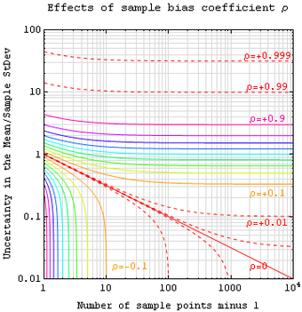{kind=link}
An estimate of expected error in the sample mean of variable $A$ , sampled at $N$ locations in a parameter space $x$ , can be expressed in terms of sample bias coefficient $\rho$ -- defined as the average auto-correlation coefficient over all sample point pairs. This generalized error in the mean is the square root of the sample variance (treated as a population) times $\frac{1+(N-1)\rho}{(N-1)(1-\rho)}$ . The $\rho = 0$ line is the more familiar standard error in the mean for samples that are uncorrelated.
Mean-Squared Error
The mean squared error (MSE) of $\hat { \theta }$ is defined as the expected value of the squared errors. It is used to indicate how far, on average, the collection of estimates are from the single parameter being estimated $\left( \theta \right)$ . Suppose the parameter is the bull's-eye of a target, the estimator is the process of shooting arrows at the target, and the individual arrows are estimates (samples). In this case, high MSE means the average distance of the arrows from the bull's-eye is high, and low MSE means the average distance from the bull's-eye is low. The arrows may or may not be clustered. For example, even if all arrows hit the same point, yet grossly miss the target, the MSE is still relatively large. However, if the MSE is relatively low, then the arrows are likely more highly clustered (than highly dispersed).
12.1.2. Estimates and Sample Size
Here, we present how to calculate the minimum sample size needed to estimate a population mean ($\mu$ ) and population proportion ($p$ ).
Learning Objective
Calculate sample size required to estimate the population mean
Key Points
- Before beginning a study, it is important to determine the minimum sample size, taking into consideration the desired level of confidence, the margin of error, and a previously observed sample standard deviation.
- When $n \geq 30$ , the sample standard deviation ($s$ ) can be used in place of the population standard deviation ($\sigma$ ).
- The minimum sample size $n$ needed to estimate the population mean ($\mu$ ) is calculated using the formula: $n={ \left( \frac { { Z }_{ \frac { \alpha }{ 2 } }\sigma }{ E } \right) }^{ 2 }$ .${ \left( \frac { { Z }_{ \frac { \alpha }{ 2 } }\sigma }{ E } \right) }^{ 2 }$ .
- The minimum sample size $n$ needed to estimate the population proportion ($p$ ) is calculated using the formula: $n=p'q'\left( \frac { { Z }_{ \frac { \alpha }{ 2 } } }{ E } \right) ^{ 2 }$ .
Key Term
- margin of error
- An expression of the lack of precision in the results obtained from a sample.
Determining Sample Size Required to Estimate the Population Mean ($\mu$ )
Before calculating a point estimate and creating a confidence interval, a sample must be taken. Often, the number of data values needed in a sample to obtain a particular level of confidence within a given error needs to be determined before taking the sample. If the sample is too small, the result may not be useful, and if the sample is too big, both time and money are wasted in the sampling. The following text discusses how to determine the minimum sample size needed to make an estimate given the desired confidence level and the observed standard deviation.
First, consider the margin of error, $E$ , the greatest possible distance between the point estimate and the value of the parameter it is estimating. To calculate $E$ , we need to know the desired confidence level (${ Z }_{ \frac { \alpha }{ 2 } }$ ) and the population standard deviation, $\sigma$ . When $n \geq 30$ , the sample standard deviation ($s$ ) can be used to approximate the population standard deviation $\sigma$ .
To change the size of the error ($E$ ), two variables in the formula could be changed: the level of confidence (${ Z }_{ \frac { \alpha }{ 2 } }$ ) or the sample size ($n$ ). The standard deviation ($\sigma$ ) is a given and cannot change.
As the confidence increases, the margin of error ($E$ ) increases. To ensure that the margin of error is small, the confidence level would have to decrease. Hence, changing the confidence to lower the error is not a practical solution.
As the sample size ($n$ ) increases, the margin of error decreases. The question now becomes: how large a sample is needed for a particular error? To determine this, begin by solving the equation for the $E$ in terms of $n$ :
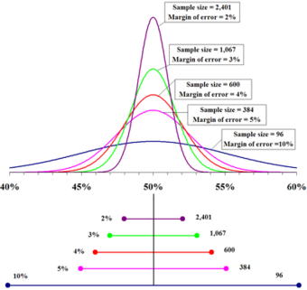{kind=link}
The top portion of this graphic depicts probability densities that show the relative likelihood that the "true" percentage is in a particular area given a reported percentage of 50%. The bottom portion shows the 95% confidence intervals (horizontal line segments), the corresponding margins of error (on the left), and sample sizes (on the right). In other words, for each sample size, one is 95% confident that the "true" percentage is in the region indicated by the corresponding segment. The larger the sample is, the smaller the margin of error is.
where ${ Z }_{ \frac { \alpha }{ 2 } }$ is the critical $z$ score based on the desired confidence level, $E$ is the desired margin of error, and $\sigma$ is the population standard deviation.
Since the population standard deviation is often unknown, the sample standard deviation from a previous sample of size $n\geq 30$ may be used as an approximation to $s$ . Now, we can solve for $n$ to see what would be an appropriate sample size to achieve our goals. Note that the value found by using the formula for sample size is generally not a whole number. Since the sample size must be a whole number, always round up to the next larger whole number.
Example
Suppose the scores on a statistics final are normally distributed with a standard deviation of 10 points. Construct a 95% confidence interval with an error of no more than 2 points.
Solution
So, a sample of size of 68 must be taken to create a 95% confidence interval with an error of no more than 2 points.
Determining Sample Size Required to Estimate Population Proportion ($p$ )
The calculations for determining sample size to estimate a proportion ($p$ ) are similar to those for estimating a mean ($\mu$ ). In this case, the margin of error, $E$ , is found using the formula:
where:
- $p' = \frac{x}{n}$ is the point estimate for the population proportion
- $x$ is the number of successes in the sample
- $n$ is the number in the sample; and
- $q' = 1-p'$
Then, solving for the minimum sample size $n$ needed to estimate $p$:
Example
The Mesa College mathematics department has noticed that a number of students place in a non-transfer level course and only need a 6 week refresher rather than an entire semester long course. If it is thought that about 10% of the students fall in this category, how many must the department survey if they wish to be 95% certain that the true population proportion is within $\pm 5\%$ ?
Solution
So, a sample of size of 139 must be taken to create a 95% confidence interval with an error of $\pm 5\%$ .
12.1.3. Estimating the Target Parameter: Point Estimation
Point estimation involves the use of sample data to calculate a single value which serves as the "best estimate" of an unknown population parameter.
Learning Objective
Contrast why MLE and linear least squares are popular methods for estimating parameters
Key Points
- In inferential statistics, data from a sample is used to "estimate" or "guess" information about the data from a population.
- The most unbiased point estimate of a population mean is the sample mean.
- Maximum-likelihood estimation uses the mean and variance as parameters and finds parametric values that make the observed results the most probable.
- Linear least squares is an approach fitting a statistical model to data in cases where the desired value provided by the model for any data point is expressed linearly in terms of the unknown parameters of the model (as in regression).
Key Term
- point estimate
- a single value estimate for a population parameter
In inferential statistics, data from a sample is used to "estimate" or "guess" information about the data from a population. Point estimation involves the use of sample data to calculate a single value or point (known as a statistic) which serves as the "best estimate" of an unknown population parameter. The point estimate of the mean is a single value estimate for a population parameter. The most unbiased point estimate of a population mean (µ) is the sample mean ($\bar { x }$ ).
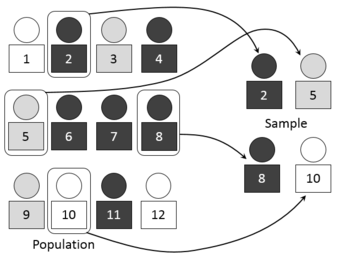{kind=link}
We use point estimators, such as the sample mean, to estimate or guess information about the data from a population. This image visually represents the process of selecting random number-assigned members of a larger group of people to represent that larger group.
Maximum Likelihood
A popular method of estimating the parameters of a statistical model is maximum-likelihood estimation (MLE). When applied to a data set and given a statistical model, maximum-likelihood estimation provides estimates for the model's parameters. The method of maximum likelihood corresponds to many well-known estimation methods in statistics. For example, one may be interested in the heights of adult female penguins, but be unable to measure the height of every single penguin in a population due to cost or time constraints. Assuming that the heights are normally (Gaussian) distributed with some unknown mean and variance, the mean and variance can be estimated with MLE while only knowing the heights of some sample of the overall population. MLE would accomplish this by taking the mean and variance as parameters and finding particular parametric values that make the observed results the most probable, given the model.
In general, for a fixed set of data and underlying statistical model, the method of maximum likelihood selects the set of values of the model parameters that maximizes the likelihood function. Maximum-likelihood estimation gives a unified approach to estimation, which is well-defined in the case of the normal distribution and many other problems. However, in some complicated problems, maximum-likelihood estimators are unsuitable or do not exist.
Linear Least Squares
Another popular estimation approach is the linear least squares method. Linear least squares is an approach fitting a statistical model to data in cases where the desired value provided by the model for any data point is expressed linearly in terms of the unknown parameters of the model (as in regression). The resulting fitted model can be used to summarize the data, to estimate unobserved values from the same system, and to understand the mechanisms that may underlie the system.
Mathematically, linear least squares is the problem of approximately solving an over-determined system of linear equations, where the best approximation is defined as that which minimizes the sum of squared differences between the data values and their corresponding modeled values. The approach is called "linear" least squares since the assumed function is linear in the parameters to be estimated. In statistics, linear least squares problems correspond to a statistical model called linear regression which arises as a particular form of regression analysis. One basic form of such a model is an ordinary least squares model.
12.1.4. Estimating the Target Parameter: Interval Estimation
Interval estimation is the use of sample data to calculate an interval of possible (or probable) values of an unknown population parameter.
Learning Objective
Use sample data to calculate interval estimation
Key Points
- The most prevalent forms of interval estimation are confidence intervals (a frequentist method) and credible intervals (a Bayesian method).
- When estimating parameters of a population, we must verify that the sample is random, that data from the population have a Normal distribution with mean $\mu$ and standard deviation $\sigma$ , and that individual observations are independent.
- In order to specify a specific $t$ -distribution, which is different for each sample size $n$ , we use its degrees of freedom, which is denoted by $df$ , and $df = n-1$ .
- If we wanted to calculate a confidence interval for the population mean, we would use: $\bar{x}\pm t^{*}\frac{s}{\sqrt{n}}$ , where $t^*$ is the critical value for the $t(n-1)$ distribution.
Key Terms
- t-distribution
- a family of continuous probability disrtibutions that arises when estimating the mean of a normally distributed population in situations where the sample size is small and population standard devition is unknown
- critical value
- the value corresponding to a given significance level
Interval estimation is the use of sample data to calculate an interval of possible (or probable) values of an unknown population parameter. The most prevalent forms of interval estimation are:
- confidence intervals (a frequentist method); and
- credible intervals (a Bayesian method).
Other common approaches to interval estimation are:
- Tolerance intervals
- Prediction intervals - used mainly in Regression Analysis
- Likelihood intervals
Example: Estimating the Population Mean
How can we construct a confidence interval for an unknown population mean $\mu$ when we don't know the population standard deviation $\sigma$ ? We need to estimate from the data in order to do this. We also need to verify three conditions about the data:
- The data is from a simple random sample of size $n$ from the population of interest.
- Data from the population have a Normal distribution with mean and standard deviation. These are both unknown parameters.
- The method for calculating a confidence interval assumes that individual observations are independent.
The sample mean $\bar{x}$ has a Normal distribution with mean and standard deviation $\frac{\sigma }{\sqrt{n}}$ . Since we don't know $\sigma$ , we estimate it using the sample standard deviation $s$ . So, we estimate the standard deviation of $\bar{x}$ using $\frac{s }{\sqrt{n}}$ , which is called the standard error of the sample mean.
The $t$ -Distribution
When we do not know $\frac{\sigma}{\sqrt{n}}$ , we use $\frac{s }{\sqrt{n}}$ . The distribution of the resulting statistic, $t$ , is not Normal and fits the $t$ -distribution. There is a different $t$ -distribution for each sample size $n$ . In order to specify a specific $t$ -distribution, we use its degrees of freedom, which is denoted by $df$ , and $df= n-1$ .
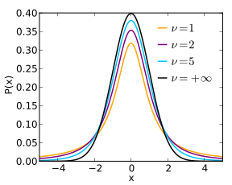{kind=link}
A plot of the $t$ -distribution for several different degrees of freedom.
If we wanted to estimate the population mean, we can now put together everything we've learned. First, draw a simple random sample from a population with an unknown mean. A confidence interval for is calculated by: $\bar{x}\pm t^{*}\frac{s}{\sqrt{n}}$ , where $t^*$ is the critical value for the $t(n-1)$ distribution.
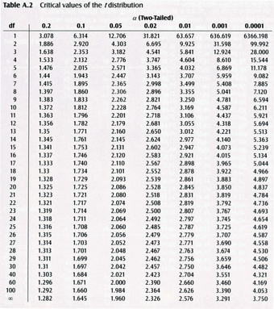{kind=link}
Critical values of the $t$ -distribution.
12.1.5. Estimating a Population Proportion
In order to estimate a population proportion of some attribute, it is helpful to rely on the proportions observed within a sample of the population.
Learning Objective
Derive the population proportion using confidence intervals
Key Points
- If you want to rely on a sample, it is important that the sample be random (i.e., done in such as way that each member of the underlying population had an equal chance of being selected for the sample).
- As the size of a random sample increases, there is greater "confidence" that the observed sample proportion will be "close" to the actual population proportion.
- For general estimates of a population proportion, we use the formula: $\sqrt{\frac{\hat{p}(1-\hat{p})}{n}}$ .
- To estimate a population proportion to be within a specific confidence interval, we use the formula: $\hat{p}\pm z^{*}\sqrt{\frac{\hat{p}(1-\hat{p})}{n}}$ .
Key Terms
- standard error
- A measure of how spread out data values are around the mean, defined as the square root of the variance.
- confidence interval
- A type of interval estimate of a population parameter used to indicate the reliability of an estimate.
Facts About Population Proportions
You do not need to be a math major or a professional statistician to have an intuitive appreciation of the following:
- In order to estimate the proportions of some attribute within a population, it would be helpful if you could rely on the proportions observed within a sample of the population.
- If you want to rely on a sample, it is important that the sample be random. This means that the sampling was done in such a way that each member of the underlying population had an equal chance of being selected for the sample.
- The size of the sample is important. As the size of a random sample increases, there is greater "confidence" that the observed sample proportion will be "close" to the actual population proportion. If you were to toss a fair coin ten times, it would not be that surprising to get only 3 or fewer heads (a sample proportion of 30% or less). But if there were 1,000 tosses, most people would agree – based on intuition and general experience – that it would be very unlikely to get only 300 or fewer heads. In other words, with the larger sample size, it is generally apparent that the sample proportion will be closer to the actual "population" proportion of 50%.
- While the sample proportion might be the best estimate of the total population proportion, you would not be very confident that this is exactly the population proportion.
Finding the Population Proportion Using Confidence Intervals
Let's look at the following example. Assume a political pollster samples 400 voters and finds 208 for Candidate $A$ and 192 for Candidate $B$ . This leads to an estimate of 52% as $A$ 's support in the population. However, it is unlikely that $A$ 's support actual will be exactly 52%. We will call 0.52 $\hat{p}$ (pronounced "p-hat"). The population proportion, $p$, is estimated using the sample proportion $\hat{p}$ . However, the estimate is usually off by what is called the standard error (SE). The SE can be calculated by:
$\displaystyle \sqrt{\frac{\hat{p}(1-\hat{p})}{n}}$
where $n$ is the sample size. So, in this case, the SE is approximately equal to 0.02498. Therefore, a good population proportion for this example would be $0.52 \pm 0.2498$ .
Often, statisticians like to use specific confidence intervals for $p$ . This is computed slightly differently, using the formula:
$\displaystyle \hat{p}\pm z^{*}\sqrt{\frac{\hat{p}(1-\hat{p})}{n}}$
where $z^*$ is the upper critical value of the standard normal distribution. In the above example, if we wished to calculate $p$ with a confidence of 95%, we would use a $Z$ -value of 1.960 (found using a critical value table), and we would find $p$ to be estimated as $0.52\pm0.04896$ . So, we could say with 95% confidence that between 47.104% and 56.896% of the people will vote for candidate $A$ .
{kind=link}
$t$ -table used for finding $z^*$ for a certain level of confidence.
A simple guideline – If you use a confidence level of $X\%$ , you should expect $(100-X)\%$ of your conclusions to be incorrect. So, if you use a confidence level of 95%, you should expect 5% of your conclusions to be incorrect.
12.2. Statistical Power
12.2.1. Statistical Power
Statistical power helps us answer the question of how much data to collect in order to find reliable results.
Learning Objective
Discuss statistical power as it relates to significance testing and breakdown the factors that influence it.
Key Points
- Statistical power is the probability that a test will find a statistically significant difference between two samples, as a function of the size of the true difference between the two populations.
- Statistical power is the probability of finding a difference that does exist, as opposed to the likelihood of declaring a difference that does not exist.
- Statistical power depends on the significance criterion used in the test, the magnitude of the effect of interest in the population, and the sample size used to the detect the effect.
Key Terms
- significance criterion
- a statement of how unlikely a positive result must be, if the null hypothesis of no effect is true, for the null hypothesis to be rejected
- null hypothesis
- A hypothesis set up to be refuted in order to support an alternative hypothesis; presumed true until statistical evidence in the form of a hypothesis test indicates otherwise.
- Type I error
- An error occurring when the null hypothesis (H0) is true, but is rejected.
In statistical practice, it is possible to miss a real effect simply by not taking enough data. In most cases, this is a problem. For instance, we might miss a viable medicine or fail to notice an important side-effect. How do we know how much data to collect? Statisticians provide the answer in the form of statistical power.
Background
Statistical tests use data from samples to assess, or make inferences about, a statistical population. In the concrete setting of a two-sample comparison, the goal is to assess whether the mean values of some attribute obtained for individuals in two sub-populations differ. For example, to test the null hypothesis that the mean scores of men and women on a test do not differ, samples of men and women are drawn. The test is administered to them, and the mean score of one group is compared to that of the other group using a statistical test such as the two-sample z-test. The power of the test is the probability that the test will find a statistically significant difference between men and women, as a function of the size of the true difference between those two populations. Note that power is the probability of finding a difference that does exist, as opposed to the likelihood of declaring a difference that does not exist (which is known as a Type I error or "false positive").
Factors Influencing Power
Statistical power may depend on a number of factors. Some of these factors may be particular to a specific testing situation, but at a minimum, power nearly always depends on the following three factors:
- The Statistical Significance Criterion Used in the Test: A significance criterion is a statement of how unlikely a positive result must be, if the null hypothesis of no effect is true, for the null hypothesis to be rejected. The most commonly used criteria are probabilities of 0.05 (5%, 1 in 20), 0.01 (1%, 1 in 100), and 0.001 (0.1%, 1 in 1000). One easy way to increase the power of a test is to carry out a less conservative test by using a larger significance criterion, for example 0.10 instead of 0.05. This increases the chance of rejecting the null hypothesis when the null hypothesis is false, but it also increases the risk of obtaining a statistically significant result (i.e. rejecting the null hypothesis) when the null hypothesis is not false.
- The Magnitude of the Effect of Interest in the Population: The magnitude of the effect of interest in the population can be quantified in terms of an effect size, where there is greater power to detect larger effects. An effect size can be a direct estimate of the quantity of interest, or it can be a standardized measure that also accounts for the variability in the population. If constructed appropriately, a standardized effect size, along with the sample size, will completely determine the power. An unstandardized (direct) effect size will rarely be sufficient to determine the power, as it does not contain information about the variability in the measurements.
- The Sample Size Used to Detect the Effect: The sample size determines the amount of sampling error inherent in a test result. Other things being equal, effects are harder to detect in smaller samples. Increasing sample size is often the easiest way to boost the statistical power of a test.
A Simple Example
Suppose a gambler is convinced that an opponent has an unfair coin. Rather than getting heads half the time and tails half the time, the proportion is different, and the opponent is using this to cheat at incredibly boring coin-flipping games. How do we prove it?
Let's say we look for a significance criterion of 0.05. That is, if we count up the number of heads after 10 or 100 trials and find a deviation from what we'd expect – half heads, half tails – the coin would be unfair if there's only a 5% chance of getting a deviation that size or larger with a fair coin. What happens if we flip a coin 10 times and apply these criteria?
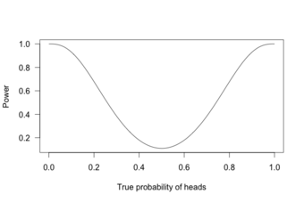{kind=link}
This graph shows the true probability of heads when flipping a coin 10 times.
This is called a power curve. Along the horizontal axis, we have the different possibilities for the coin's true probability of getting heads, corresponding to different levels of unfairness. On the vertical axis is the probability that I will conclude the coin is rigged after 10 tosses, based on the probability of the result.
This graph shows that the coin is rigged to give heads 60% of the time. However, if we flip the coin only 10 times, we only have a 20% chance of concluding that it's rigged. There's too little data to separate rigging from random variation. However, what if we flip the coin 100 times?
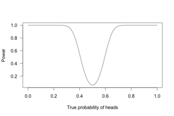{kind=link}
This graph shows the true probability of heads when flipping a coin 100 times.
Or 1,000 times?
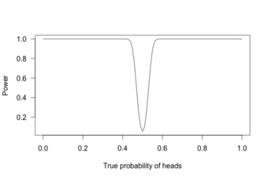{kind=link}
This graph shows the true probability of heads when flipping a coin 1,000 times.
With 1,000 flips, we can easily tell if the coin is rigged to give heads 60% of the time. It is overwhelmingly unlikely that we could flip a fair coin 1,000 times and get more than 600 heads.
12.3. Comparing More than Two Means
12.3.1. Elements of a Designed Study
The problem of comparing more than two means results from the increase in Type I error that occurs when statistical tests are used repeatedly.
Learning Objective
Discuss the increasing Type I error that accompanies comparisons of more than two means and the various methods of correcting this error.
Key Points
- Unless the tests are perfectly dependent, the familywide error rate increases as the number of comparisons increases.
- Multiple testing correction refers to re-calculating probabilities obtained from a statistical test which was repeated multiple times.
- In order to retain a prescribed familywise error rate $\alpha$ in an analysis involving more than one comparison, the error rate for each comparison must be more stringent than $\alpha$ .
- The most conservative, but free of independency and distribution assumptions method, way of controlling the familywise error rate is known as the Bonferroni correction.
- Multiple comparison procedures are commonly used in an analysis of variance after obtaining a significant omnibus test result, like the ANOVA $F$ -test.
Key Terms
- ANOVA
- Analysis of variance—a collection of statistical models used to analyze the differences between group means and their associated procedures (such as "variation" among and between groups).
- Boole's inequality
- a probability theory stating that for any finite or countable set of events, the probability that at least one of the events happens is no greater than the sum of the probabilities of the individual events
- Bonferroni correction
- a method used to counteract the problem of multiple comparisons; considered the simplest and most conservative method to control the familywise error rate
For hypothesis testing, the problem of comparing more than two means results from the increase in Type I error that occurs when statistical tests are used repeatedly. If $n$ independent comparisons are performed, the experiment-wide significance level $\bar { \alpha }$ , also termed FWER for familywise error rate, is given by:
Hence, unless the tests are perfectly dependent, $\bar { \alpha }$ increases as the number of comparisons increases. If we do not assume that the comparisons are independent, then we can still say:
$\bar { \alpha } \le n\cdot { \alpha }_ {\text{per comparison}}$ .
There are different ways to assure that the familywise error rate is at most $\bar { \alpha }$ . The most conservative, but free of independency and distribution assumptions method, is known as the Bonferroni correction ${\alpha }_ {\text{per comparison}}=\frac { \bar { \alpha } }{ n }$ . A more sensitive correction can be obtained by solving the equation for the familywise error rate of independent comparisons for ${\alpha }_ {\text{per comparison}}$ .
This yields ${\alpha }_ {\text{per comparison}}=1-{ \left( 1-\bar { \alpha } \right) }^{ \frac { 1 }{ n } }$ , which is known as the Šidák correction. Another procedure is the Holm–Bonferroni method, which uniformly delivers more power than the simple Bonferroni correction by testing only the most extreme $p$ -value ($i=1$ ) against the strictest criterion, and the others ($i>1$ ) against progressively less strict criteria.
Methods
Multiple testing correction refers to re-calculating probabilities obtained from a statistical test which was repeated multiple times. In order to retain a prescribed familywise error rate $\alpha$ in an analysis involving more than one comparison, the error rate for each comparison must be more stringent than $\alpha$ . Boole's inequality implies that if each test is performed to have type I error rate $\frac{\alpha}{n}$ , the total error rate will not exceed $\alpha$ . This is called the Bonferroni correction and is one of the most commonly used approaches for multiple comparisons.
Because simple techniques such as the Bonferroni method can be too conservative, there has been a great deal of attention paid to developing better techniques, such that the overall rate of false positives can be maintained without inflating the rate of false negatives unnecessarily. Such methods can be divided into general categories:
- Methods where total alpha can be proved to never exceed 0.05 (or some other chosen value) under any conditions. These methods provide "strong" control against Type I error, in all conditions including a partially correct null hypothesis.
- Methods where total alpha can be proved not to exceed 0.05 except under certain defined conditions.
- Methods which rely on an omnibus test before proceeding to multiple comparisons. Typically these methods require a significant ANOVA/Tukey's range test before proceeding to multiple comparisons. These methods have "weak" control of Type I error.
- Empirical methods, which control the proportion of Type I errors adaptively, utilizing correlation and distribution characteristics of the observed data.
Post-Hoc Testing of ANOVA
Multiple comparison procedures are commonly used in an analysis of variance after obtaining a significant omnibus test result, like the ANOVA $F$ -test. The significant ANOVA result suggests rejecting the global null hypothesis $H_0$ that the means are the same across the groups being compared. Multiple comparison procedures are then used to determine which means differ. In a one-way ANOVA involving $K$ group means, there are $\frac{K(K-1)}{2}$ pairwise comparisons.
12.3.2. Randomized Design: Single-Factor
Completely randomized designs study the effects of one primary factor without the need to take other nuisance variables into account.
Learning Objective
Discover how randomized experimental design allows researchers to study the effects of a single factor without taking into account other nuisance variables.
Key Points
- In complete random design, the run sequence of the experimental units is determined randomly.
- The levels of the primary factor are also randomly assigned to the experimental units in complete random design.
- All completely randomized designs with one primary factor are defined by three numbers: $k$ (the number of factors, which is always 1 for these designs), $L$ (the number of levels), and $n$ (the number of replications). The total sample size (number of runs) is $N= k \cdot L \cdot n$ .
Key Terms
- factor
- The explanatory, or independent, variable in an experiment.
- level
- The specific value of a factor in an experiment.
In the design of experiments, completely randomized designs are for studying the effects of one primary factor without the need to take into account other nuisance variables. The experiment under a completely randomized design compares the values of a response variable based on the different levels of that primary factor. For completely randomized designs, the levels of the primary factor are randomly assigned to the experimental units.
Randomization
In complete random design, the run sequence of the experimental units is determined randomly. For example, if there are 3 levels of the primary factor with each level to be run 2 times, then there are $6!$ (where "!" denotes factorial) possible run sequences (or ways to order the experimental trials). Because of the replication, the number of unique orderings is 90 (since $90=\frac{6!}{2!2!2!}$ ). An example of an unrandomized design would be to always run 2 replications for the first level, then 2 for the second level, and finally 2 for the third level. To randomize the runs, one way would be to put 6 slips of paper in a box with 2 having level 1, 2 having level 2, and 2 having level 3. Before each run, one of the slips would be drawn blindly from the box and the level selected would be used for the next run of the experiment.
Three Key Numbers
All completely randomized designs with one primary factor are defined by three numbers: $k$ (the number of factors, which is always 1 for these designs), $L$ (the number of levels), and $n$ (the number of replications). The total sample size (number of runs) is $N=k\cdot L \cdot n$ . Balance dictates that the number of replications be the same at each level of the factor (this will maximize the sensitivity of subsequent statistical $t$ - (or $F$ -) tests). An example of a completely randomized design using the three numbers is:
- $k$ : 1 factor ($X_1$ )
- $L$ : 4 levels of that single factor (called 1, 2, 3, and 4)
- $n$ : 3 replications per level
- $N$ : 4 levels multiplied by 3 replications per level gives 12 runs
12.3.3. Multiple Comparisons of Means
ANOVA is useful in the multiple comparisons of means due to its reduction in the Type I error rate.
Learning Objective
Explain the issues that arise when researchers aim to make a number of formal comparisons, and give examples of how these issues can be resolved.
Key Points
- "Multiple comparisons" arise when a statistical analysis encompasses a number of formal comparisons, with the presumption that attention will focus on the strongest differences among all comparisons that are made.
- As the number of comparisons increases, it becomes more likely that the groups being compared will appear to differ in terms of at least one attribute.
- Doing multiple two-sample $t$ -tests would result in an increased chance of committing a Type I error.
Key Terms
- ANOVA
- Analysis of variance—a collection of statistical models used to analyze the differences between group means and their associated procedures (such as "variation" among and between groups).
- null hypothesis
- A hypothesis set up to be refuted in order to support an alternative hypothesis; presumed true until statistical evidence in the form of a hypothesis test indicates otherwise.
- Type I error
- An error occurring when the null hypothesis (H0) is true, but is rejected.
The multiple comparisons problem occurs when one considers a set of statistical inferences simultaneously or infers a subset of parameters selected based on the observed values. Errors in inference, including confidence intervals that fail to include their corresponding population parameters or hypothesis tests that incorrectly reject the null hypothesis, are more likely to occur when one considers the set as a whole. Several statistical techniques have been developed to prevent this, allowing direct comparison of means significance levels for single and multiple comparisons. These techniques generally require a stronger level of observed evidence in order for an individual comparison to be deemed "significant," so as to compensate for the number of inferences being made.
The Problem
When researching, we typically refer to comparisons of two groups, such as a treatment group and a control group. "Multiple comparisons" arise when a statistical analysis encompasses a number of formal comparisons, with the presumption that attention will focus on the strongest differences among all comparisons that are made. Failure to compensate for multiple comparisons can have important real-world consequences
As the number of comparisons increases, it becomes more likely that the groups being compared will appear to differ in terms of at least one attribute. Our confidence that a result will generalize to independent data should generally be weaker if it is observed as part of an analysis that involves multiple comparisons, rather than an analysis that involves only a single comparison.
For example, if one test is performed at the 5% level, there is only a 5% chance of incorrectly rejecting the null hypothesis if the null hypothesis is true. However, for 100 tests where all null hypotheses are true, the expected number of incorrect rejections is 5. If the tests are independent, the probability of at least one incorrect rejection is 99.4%. These errors are called false positives, or Type I errors.
Techniques have been developed to control the false positive error rate associated with performing multiple statistical tests. Similarly, techniques have been developed to adjust confidence intervals so that the probability of at least one of the intervals not covering its target value is controlled.
Analysis of Variance (ANOVA) for Comparing Multiple Means
In order to compare the means of more than two samples coming from different treatment groups that are normally distributed with a common variance, an analysis of variance is often used. In its simplest form, ANOVA provides a statistical test of whether or not the means of several groups are equal. Therefore, it generalizes the $t$ -test to more than two groups. Doing multiple two-sample $t$ -tests would result in an increased chance of committing a Type I error. For this reason, ANOVAs are useful in comparing (testing) three or more means (groups or variables) for statistical significance.
The following table summarizes the calculations that need to be done, which are explained below:
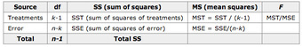{kind=link}
This table summarizes the calculations necessary in an ANOVA for comparing multiple means.
Letting $x_{ij}$ be the $j$th measurement in the $i$th sample (where $j=1, 2, \cdots n$ ), then:
and the sum of the squares of the treatments is:
where $T_i$ is the total of the observations in treatment $i$ , $n_i$ is the number of observations in sample $i$ and CM is the correction of the mean:
The sum of squares of the error SSE is given by:
and
Example
An example for the effect of breakfast on attention span (in minutes) for small children is summarized in the table below:
.
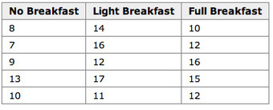{kind=link}
This table summarizes the effect of breakfast on attention span (in minutes) for small children.
The hypothesis test would be:
versus:
The solution to the test can be seen in the figure below:
.
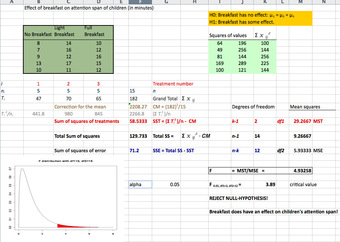{kind=link}
This image shows the solution to our ANOVA example performed in Excel.
The test statistic $F$ is equal to 4.9326. The corresponding right-tail probability is 0.027, which means that if the significance level is 0.05, the test statistic would be in the rejection region, and therefore, the null-hypothesis would be rejected.
Hence, this indicates that the means are not equal (i.e., that sample values give sufficient evidence that not all means are the same). In terms of the example this means that breakfast (and its size) does have an effect on children's attention span.
12.3.4. Randomized Block Design
Block design is the arranging of experimental units into groups (blocks) that are similar to one another, to control for certain factors.
Learning Objective
Reconstruct how the use of randomized block design is used to control the effects of nuisance factors.
Key Points
- The basic concept of blocking is to create homogeneous blocks in which the nuisance factors are held constant, and the factor of interest is allowed to vary.
- Nuisance factors are those that may affect the measured result, but are not of primary interest.
- The general rule is: "Block what you can; randomize what you cannot. " Blocking is used to remove the effects of a few of the most important nuisance variables. Randomization is then used to reduce the contaminating effects of the remaining nuisance variables.
Key Terms
- blocking
- A schedule for conducting treatment combinations in an experimental study such that any effects on the experimental results due to a known change in raw materials, operators, machines, etc., become concentrated in the levels of the blocking variable.
- nuisance factors
- Variables that may affect the measured results, but are not of primary interest.
What is Blocking?
In the statistical theory of the design of experiments, blocking is the arranging of experimental units in groups (blocks) that are similar to one another. Typically, a blocking factor is a source of variability that is not of primary interest to the experimenter. An example of a blocking factor might be the sex of a patient; by blocking on sex, this source of variability is controlled for, thus leading to greater accuracy.
Nuisance Factors
For randomized block designs, there is one factor or variable that is of primary interest. However, there are also several other nuisance factors. Nuisance factors are those that may affect the measured result, but are not of primary interest. For example, in applying a treatment, nuisance factors might be the specific operator who prepared the treatment, the time of day the experiment was run, and the room temperature. All experiments have nuisance factors. The experimenter will typically need to spend some time deciding which nuisance factors are important enough to keep track of or control, if possible, during the experiment.
When we can control nuisance factors, an important technique known as blocking can be used to reduce or eliminate the contribution to experimental error contributed by nuisance factors. The basic concept is to create homogeneous blocks in which the nuisance factors are held constant and the factor of interest is allowed to vary. Within blocks, it is possible to assess the effect of different levels of the factor of interest without having to worry about variations due to changes of the block factors, which are accounted for in the analysis.
The general rule is: "Block what you can; randomize what you cannot. " Blocking is used to remove the effects of a few of the most important nuisance variables. Randomization is then used to reduce the contaminating effects of the remaining nuisance variables.
Example of a Blocked Design
The progress of a particular type of cancer differs in women and men. A clinical experiment to compare two therapies for their cancer therefore treats gender as a blocking variable, as illustrated in . Two separate randomizations are done—one assigning the female subjects to the treatments and one assigning the male subjects. It is important to note that there is no randomization involved in making up the blocks. They are groups of subjects that differ in some way (gender in this case) that is apparent before the experiment begins.
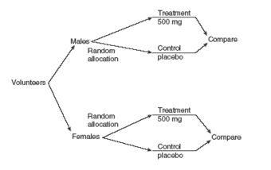{kind=link}
An example of a blocked design, where the blocking factor is gender.
12.3.5. Factorial Experiments: Two Factors
A full factorial experiment is an experiment whose design consists of two or more factors with discrete possible levels.
Learning Objective
Outline the design of a factorial experiment, the corresponding notations, and the resulting analysis.
Key Points
- A full factorial experiment allows the investigator to study the effect of each factor on the response variable, as well as the effects of interactions between factors on the response variable.
- The experimental units of a factorial experiment take on all possible combinations of the discrete levels across all such factors.
- To save space, the points in a two-level factorial experiment are often abbreviated with strings of plus and minus signs.
Key Terms
- level
- The specific value of a factor in an experiment.
- factor
- The explanatory, or independent, variable in an experiment.
A full factorial experiment is an experiment whose design consists of two or more factors, each with discrete possible values (or levels), and whose experimental units take on all possible combinations of these levels across all such factors. A full factorial design may also be called a fully crossed design. Such an experiment allows the investigator to study the effect of each factor on the response variable, as well as the effects of interactions between factors on the response variable.
For the vast majority of factorial experiments, each factor has only two levels. For example, with two factors each taking two levels, a factorial experiment would have four treatment combinations in total, and is usually called a 2 by 2 factorial design.
If the number of combinations in a full factorial design is too high to be logistically feasible, a fractional factorial design may be done, in which some of the possible combinations (usually at least half) are omitted.
Notation
To save space, the points in a two-level factorial experiment are often abbreviated with strings of plus and minus signs. The strings have as many symbols as factors, and their values dictate the level of each factor: conventionally, $-$ for the first (or low) level, and $+$ for the second (or high) level .
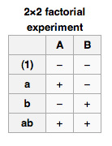{kind=link}
This table shows the notation used for a 2x2 factorial experiment.
The factorial points can also be abbreviated by (1), $a$ , $b$ , and $ab$ , where the presence of a letter indicates that the specified factor is at its high (or second) level and the absence of a letter indicates that the specified factor is at its low (or first) level (for example, $a$ indicates that factor $A$ is on its high setting, while all other factors are at their low (or first) setting). (1) is used to indicate that all factors are at their lowest (or first) values.
Analysis
A factorial experiment can be analyzed using ANOVA or regression analysis. It is relatively easy to estimate the main effect for a factor. To compute the main effect of a factor $A$ , subtract the average response of all experimental runs for which $A$ was at its low (or first) level from the average response of all experimental runs for which $A$ was at its high (or second) level.
Other useful exploratory analysis tools for factorial experiments include main effects plots, interaction plots, and a normal probability plot of the estimated effects.
When the factors are continuous, two-level factorial designs assume that the effects are linear. If a quadratic effect is expected for a factor, a more complicated experiment should be used, such as a central composite design.
Example
The simplest factorial experiment contains two levels for each of two factors. Suppose an engineer wishes to study the total power used by each of two different motors, $A$ and $B$ , running at each of two different speeds, 2000 or 3000 RPM. The factorial experiment would consist of four experimental units: motor $A$ at 2000 RPM, motor $B$ at 2000 RPM, motor $A$ at 3000 RPM, and motor $B$ at 3000 RPM. Each combination of a single level selected from every factor is present once.
This experiment is an example of a $2^2$ (or 2 by 2) factorial experiment, so named because it considers two levels (the base) for each of two factors (the power or superscript), or $(\text{number of levels})^{(\text{number of factors})}$ , producing $2^2 = 4$ factorial points.
Designs can involve many independent variables. As a further example, the effects of three input variables can be evaluated in eight experimental conditions shown as the corners of a cube.

This figure is a sketch of a 2 by 3 factorial design.
This can be conducted with or without replication, depending on its intended purpose and available resources. It will provide the effects of the three independent variables on the dependent variable and possible interactions.
12.4. Confidence Intervals
12.4.1. What Is a Confidence Interval?
A confidence interval is a type of interval estimate of a population parameter and is used to indicate the reliability of an estimate.
Learning Objective
Explain the principle behind confidence intervals in statistical inference
Key Points
- In inferential statistics, we use sample data to make generalizations about an unknown population.
- A confidence interval is a type of estimate, like a sample average or sample standard deviation, but instead of being just one number it is an interval of numbers.
- The interval of numbers is an estimated range of values calculated from a given set of sample data.
- The principle behind confidence intervals was formulated to provide an answer to the question raised in statistical inference: how do we resolve the uncertainty inherent in results derived from data that are themselves only a randomly selected subset of a population?
- Note that the confidence interval is likely to include an unknown population parameter.
Key Terms
- sample
- a subset of a population selected for measurement, observation, or questioning to provide statistical information about the population
- confidence interval
- A type of interval estimate of a population parameter used to indicate the reliability of an estimate.
- population
- a group of units (persons, objects, or other items) enumerated in a census or from which a sample is drawn
Example
- A confidence interval can be used to describe how reliable survey results are. In a poll of election voting-intentions, the result might be that 40% of respondents intend to vote for a certain party. A 90% confidence interval for the proportion in the whole population having the same intention on the survey date might be 38% to 42%. From the same data one may calculate a 95% confidence interval, which in this case might be 36% to 44%. A major factor determining the length of a confidence interval is the size of the sample used in the estimation procedure, for example the number of people taking part in a survey.
Suppose you are trying to determine the average rent of a two-bedroom apartment in your town. You might look in the classified section of the newpaper, write down several rents listed, and then average them together—from this you would obtain a point estimate of the true mean. If you are trying to determine the percent of times you make a basket when shooting a basketball, you might count the number of shots you make, and divide that by the number of shots you attempted. In this case, you would obtain a point estimate for the true proportion.
In inferential statistics, we use sample data to make generalizations about an unknown population. The sample data help help us to make an estimate of a population parameter. We realize that the point estimate is most likely not the exact value of the population parameter, but close to it. After calculating point estimates, we construct confidence intervals in which we believe the parameter lies.
A confidence interval is a type of estimate (like a sample average or sample standard deviation), in the form of an interval of numbers, rather than only one number. It is an observed interval (i.e., it is calculated from the observations), used to indicate the reliability of an estimate. The interval of numbers is an estimated range of values calculated from a given set of sample data. How frequently the observed interval contains the parameter is determined by the confidence level or confidence coefficient. Note that the confidence interval is likely to include an unknown population parameter.
Philosophical Issues
The principle behind confidence intervals provides an answer to the question raised in statistical inference: how do we resolve the uncertainty inherent in results derived from data that (in and of itself) is only a randomly selected subset of a population? Bayesian inference provides further answers in the form of credible intervals.
Confidence intervals correspond to a chosen rule for determining the confidence bounds; this rule is essentially determined before any data are obtained or before an experiment is done. The rule is defined such that over all possible datasets that might be obtained, there is a high probability ("high" is specifically quantified) that the interval determined by the rule will include the true value of the quantity under consideration—a fairly straightforward and reasonable way of specifying a rule for determining uncertainty intervals.
Ostensibly, the Bayesian approach offers intervals that (subject to acceptance of an interpretation of "probability" as Bayesian probability) offer the interpretation that the specific interval calculated from a given dataset has a certain probability of including the true value (conditional on the data and other information available). The confidence interval approach does not allow this, as in this formulation (and at this same stage) both the bounds of the interval and the true values are fixed values; no randomness is involved.
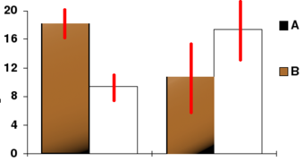{kind=link}
In this bar chart, the top ends of the bars indicate observation means and the red line segments represent the confidence intervals surrounding them. Although the bars are shown as symmetric in this chart, they do not have to be symmetric.
12.4.2. Interpreting a Confidence Interval
For users of frequentist methods, various interpretations of a confidence interval can be given.
Learning Objective
Construct a confidence intervals based on the point estimate of the quantity being considered
Key Points
- Methods for deriving confidence intervals include descriptive statistics, likelihood theory, estimating equations, significance testing, and bootstrapping.
- The confidence interval can be expressed in terms of samples: "Were this procedure to be repeated on multiple samples, the calculated confidence interval would encompass the true population parameter 90% of the time".
- The explanation of a confidence interval can amount to something like: "The confidence interval represents values for the population parameter, for which the difference between the parameter and the observed estimate is not statistically significant at the 10% level".
- The probability associated with a confidence interval may also be considered from a pre-experiment point of view, in the same context in which arguments for the random allocation of treatments to study items are made.
Key Terms
- confidence interval
- A type of interval estimate of a population parameter used to indicate the reliability of an estimate.
- frequentist
- An advocate of frequency probability.
Deriving a Confidence Interval
For non-standard applications, there are several routes that might be taken to derive a rule for the construction of confidence intervals. Established rules for standard procedures might be justified or explained via several of these routes. Typically a rule for constructing confidence intervals is closely tied to a particular way of finding a point estimate of the quantity being considered.
- Descriptive statistics - This is closely related to the method of moments for estimation. A simple example arises where the quantity to be estimated is the mean, in which case a natural estimate is the sample mean. The usual arguments indicate that the sample variance can be used to estimate the variance of the sample mean. A naive confidence interval for the true mean can be constructed centered on the sample mean with a width which is a multiple of the square root of the sample variance.
- Likelihood theory - The theory here is for estimates constructed using the maximum likelihood principle. It provides for two ways of constructing confidence intervals (or confidence regions) for the estimates.
- Estimating equations - The estimation approach here can be considered as both a generalization of the method of moments and a generalization of the maximum likelihood approach. There are corresponding generalizations of the results of maximum likelihood theory that allow confidence intervals to be constructed based on estimates derived from estimating equations.
- Significance testing - If significance tests are available for general values of a parameter, then confidence intervals/regions can be constructed by including in the $100p\%$ confidence region all those points for which the significance test of the null hypothesis that the true value is the given value is not rejected at a significance level of $1-p$ .
- Bootstrapping - In situations where the distributional assumptions for the above methods are uncertain or violated, resampling methods allow construction of confidence intervals or prediction intervals. The observed data distribution and the internal correlations are used as the surrogate for the correlations in the wider population.
Meaning and Interpretation
For users of frequentist methods, various interpretations of a confidence interval can be given:
- The confidence interval can be expressed in terms of samples (or repeated samples): "Were this procedure to be repeated on multiple samples, the calculated confidence interval (which would differ for each sample) would encompass the true population parameter 90% of the time. " Note that this does not refer to repeated measurement of the same sample, but repeated sampling.
- The explanation of a confidence interval can amount to something like: "The confidence interval represents values for the population parameter, for which the difference between the parameter and the observed estimate is not statistically significant at the 10% level. " In fact, this relates to one particular way in which a confidence interval may be constructed.
- The probability associated with a confidence interval may also be considered from a pre-experiment point of view, in the same context in which arguments for the random allocation of treatments to study items are made. Here, the experimenter sets out the way in which they intend to calculate a confidence interval. Before performing the actual experiment, they know that the end calculation of that interval will have a certain chance of covering the true but unknown value. This is very similar to the "repeated sample" interpretation above, except that it avoids relying on considering hypothetical repeats of a sampling procedure that may not be repeatable in any meaningful sense.
In each of the above, the following applies: If the true value of the parameter lies outside the 90% confidence interval once it has been calculated, then an event has occurred which had a probability of 10% (or less) of happening by chance.
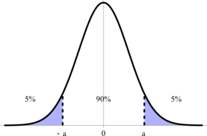{kind=link}
This figure illustrates a 90% confidence interval on a standard normal curve.
12.4.3. Caveat Emptor and the Gallup Poll
Readers of polls, such as the Gallup Poll, should exercise Caveat Emptor by taking into account the poll's margin of error.
Learning Objective
Explain how margin of error plays a significant role in making purchasing decisions
Key Points
- Historically, the Gallup Poll has measured and tracked the public's attitudes concerning virtually every political, social, and economic issue of the day, including highly sensitive or controversial subjects.
- Caveat emptor is Latin for "let the buyer beware"—the property law principle that controls the sale of real property after the date of closing, but may also apply to sales of other goods.
- The margin of error is usually defined as the "radius" (or half the width) of a confidence interval for a particular statistic from a survey.
- The larger the margin of error, the less confidence one should have that the poll's reported results are close to the "true" figures -- that is, the figures for the whole population.
- Like confidence intervals, the margin of error can be defined for any desired confidence level, but usually a level of 90%, 95% or 99% is chosen (typically 95%).
Key Terms
- caveat emptor
- Latin for "let the buyer beware"—the property law principle that controls the sale of real property after the date of closing, but may also apply to sales of other goods.
- margin of error
- An expression of the lack of precision in the results obtained from a sample.
Gallup Poll
The Gallup Poll is the division of the Gallup Company that regularly conducts public opinion polls in more than 140 countries around the world. Gallup Polls are often referenced in the mass media as a reliable and objective measurement of public opinion. Gallup Poll results, analyses, and videos are published daily on Gallup.com in the form of data-driven news.
Since inception, Gallup Polls have been used to measure and track public attitudes concerning a wide range of political, social, and economic issues (including highly sensitive or controversial subjects). General and regional-specific questions, developed in collaboration with the world's leading behavioral economists, are organized into powerful indexes and topic areas that correlate with real-world outcomes.
Caveat Emptor
Caveat emptor is Latin for "let the buyer beware." Generally, caveat emptor is the property law principle that controls the sale of real property after the date of closing, but may also apply to sales of other goods. Under its principle, a buyer cannot recover damages from a seller for defects on the property that render the property unfit for ordinary purposes. The only exception is if the seller actively conceals latent defects, or otherwise states material misrepresentations amounting to fraud.
This principle can also be applied to the reading of polling information. The reader should "beware" of possible errors and biases present that might skew the information being represented. Readers should pay close attention to a poll's margin of error.
Margin of Error
The margin of error statistic expresses the amount of random sampling error in a survey's results. The larger the margin of error, the less confidence one should have that the poll's reported results represent "true" figures (i.e., figures for the whole population). Margin of error occurs whenever a population is incompletely sampled.
The margin of error is usually defined as the "radius" (half the width) of a confidence interval for a particular statistic from a survey. When a single, global margin of error is reported, it refers to the maximum margin of error for all reported percentages using the full sample from the survey. If the statistic is a percentage, this maximum margin of error is calculated as the radius of the confidence interval for a reported percentage of 50%.
For example, if the true value is 50 percentage points, and the statistic has a confidence interval radius of 5 percentage points, then we say the margin of error is 5 percentage points. As another example, if the true value is 50 people, and the statistic has a confidence interval radius of 5 people, then we might say the margin of error is 5 people.
In some cases, the margin of error is not expressed as an "absolute" quantity; rather, it is expressed as a "relative" quantity. For example, suppose the true value is 50 people, and the statistic has a confidence interval radius of 5 people. If we use the "absolute" definition, the margin of error would be 5 people. If we use the "relative" definition, then we express this absolute margin of error as a percent of the true value. So in this case, the absolute margin of error is 5 people, but the "percent relative" margin of error is 10% (10% of 50 people is 5 people).
Like confidence intervals, the margin of error can be defined for any desired confidence level, but usually a level of 90%, 95% or 99% is chosen (typically 95%). This level is the probability that a margin of error around the reported percentage would include the "true" percentage. Along with the confidence level, the sample design for a survey (in particular its sample size) determines the magnitude of the margin of error. A larger sample size produces a smaller margin of error, all else remaining equal.
If the exact confidence intervals are used, then the margin of error takes into account both sampling error and non-sampling error. If an approximate confidence interval is used (for example, by assuming the distribution is normal and then modeling the confidence interval accordingly), then the margin of error may only take random sampling error into account. It does not represent other potential sources of error or bias, such as a non-representative sample-design, poorly phrased questions, people lying or refusing to respond, the exclusion of people who could not be contacted, or miscounts and miscalculations.
Different Confidence Levels
For a simple random sample from a large population, the maximum margin of error is a simple re-expression of the sample size $n$ . The numerators of these equations are rounded to two decimal places.
- Margin of error at 99% confidence $\displaystyle \approx \frac { 1.29 }{ \sqrt { n } }$
- Margin of error at 95% confidence $\displaystyle \approx \frac { 0.98 }{ \sqrt { n } }$
- Margin of error at 90% confidence $\displaystyle \approx \frac { 0.82 }{ \sqrt { n } }$
If an article about a poll does not report the margin of error, but does state that a simple random sample of a certain size was used, the margin of error can be calculated for a desired degree of confidence using one of the above formulae. Also, if the 95% margin of error is given, one can find the 99% margin of error by increasing the reported margin of error by about 30%.
As an example of the above, a random sample of size 400 will give a margin of error, at a 95% confidence level, of $\frac{0.98}{20}$ or 0.049 (just under 5%). A random sample of size 1,600 will give a margin of error of $\frac{0.98}{40}$ , or 0.0245 (just under 2.5%). A random sample of size 10,000 will give a margin of error at the 95% confidence level of $\frac{0.98}{100}$ , or 0.0098 - just under 1%.
{kind=link}
The top portion of this graphic depicts probability densities that show the relative likelihood that the "true" percentage is in a particular area given a reported percentage of 50%. The bottom portion shows the 95% confidence intervals (horizontal line segments), the corresponding margins of error (on the left), and sample sizes (on the right). In other words, for each sample size, one is 95% confident that the "true" percentage is in the region indicated by the corresponding segment. The larger the sample is, the smaller the margin of error is.
12.4.4. Level of Confidence
The proportion of confidence intervals that contain the true value of a parameter will match the confidence level.
Learning Objective
Explain the use of confidence intervals in estimating population parameters
Key Points
- The presence of a confidence level is guaranteed by the reasoning underlying the construction of confidence intervals.
- Confidence level is represented by a percentage.
- The desired level of confidence is set by the researcher (not determined by data).
- In applied practice, confidence intervals are typically stated at the 95% confidence level.
Key Term
- confidence level
- The probability that a measured quantity will fall within a given confidence interval.
If confidence intervals are constructed across many separate data analyses of repeated (and possibly different) experiments, the proportion of such intervals that contain the true value of the parameter will match the confidence level. This is guaranteed by the reasoning underlying the construction of confidence intervals.
Confidence intervals consist of a range of values (interval) that act as good estimates of the unknown population parameter . However, in infrequent cases, none of these values may cover the value of the parameter. The level of confidence of the confidence interval would indicate the probability that the confidence range captures this true population parameter given a distribution of samples. It does not describe any single sample. This value is represented by a percentage, so when we say, "we are 99% confident that the true value of the parameter is in our confidence interval," we express that 99% of the observed confidence intervals will hold the true value of the parameter.
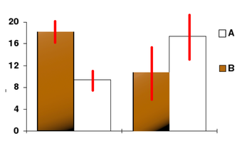{kind=link}
In this bar chart, the top ends of the bars indicate observation means and the red line segments represent the confidence intervals surrounding them. Although the bars are shown as symmetric in this chart, they do not have to be symmetric.
After a sample is taken, the population parameter is either in the interval made or not -- there is no chance. The desired level of confidence is set by the researcher (not determined by data). If a corresponding hypothesis test is performed, the confidence level is the complement of respective level of significance (i.e., a 95% confidence interval reflects a significance level of 0.05).
In applied practice, confidence intervals are typically stated at the 95% confidence level. However, when presented graphically, confidence intervals can be shown at several confidence levels (for example, 50%, 95% and 99%).
12.4.5. Determining Sample Size
A major factor determining the length of a confidence interval is the size of the sample used in the estimation procedure.
Learning Objective
Assess the most appropriate way to choose a sample size in a given situation
Key Points
- Sample size determination is the act of choosing the number of observations or replicates to include in a statistical sample.
- The sample size is an important feature of any empirical study in which the goal is to make inferences about a population from a sample.
- In practice, the sample size used in a study is determined based on the expense of data collection and the need to have sufficient statistical power.
- Larger sample sizes generally lead to increased precision when estimating unknown parameters.
Key Terms
- law of large numbers
- The statistical tendency toward a fixed ratio in the results when an experiment is repeated a large number of times.
- central limit theorem
- The theorem that states: If the sum of independent identically distributed random variables has a finite variance, then it will be (approximately) normally distributed.
- Stratified Sampling
- A method of sampling that involves dividing members of the population into homogeneous subgroups before sampling.
Sample size, such as the number of people taking part in a survey, determines the length of the estimated confidence interval. Sample size determination is the act of choosing the number of observations or replicates to include in a statistical sample. The sample size is an important feature of any empirical study in which the goal is to make inferences about a population from a sample.
In practice, the sample size used in a study is determined based on the expense of data collection and the need to have sufficient statistical power. In complicated studies there may be several different sample sizes involved. For example, in a survey sampling involving stratified sampling there would be different sample sizes for each population. In a census, data are collected on the entire population, hence the sample size is equal to the population size. In experimental design, where a study may be divided into different treatment groups, there may be different sample sizes for each group.
Sample sizes may be chosen in several different ways:
- expedience, including those items readily available or convenient to collect (choice of small sample sizes, though sometimes necessary, can result in wide confidence intervals or risks of errors in statistical hypothesis testing)
- using a target variance for an estimate to be derived from the sample eventually obtained
- using a target for the power of a statistical test to be applied once the sample is collected
Larger sample sizes generally lead to increased precision when estimating unknown parameters. For example, if we wish to know the proportion of a certain species of fish that is infected with a pathogen, we would generally have a more accurate estimate of this proportion if we sampled and examined 200, rather than 100 fish. Several fundamental facts of mathematical statistics describe this phenomenon, including the law of large numbers and the central limit theorem.
In some situations, the increase in accuracy for larger sample sizes is minimal, or even non-existent. This can result from the presence of systematic errors or strong dependence in the data, or if the data follow a heavy-tailed distribution.
Sample sizes are judged based on the quality of the resulting estimates. For example, if a proportion is being estimated, one may wish to have the 95% confidence interval be less than 0.06 units wide. Alternatively, sample size may be assessed based on the power of a hypothesis test. For example, if we are comparing the support for a certain political candidate among women with the support for that candidate among men, we may wish to have 80% power to detect a difference in the support levels of 0.04 units.
Calculating the Sample Size $n$
If researchers desire a specific margin of error, then they can use the error bound formula to calculate the required sample size. The error bound formula for a population proportion is:
Solving for $n$ gives an equation for the sample size:
12.4.6. Confidence Interval for a Population Proportion
The procedure to find the confidence interval and the confidence level for a proportion is similar to that for the population mean.
Learning Objective
Calculate the confidence interval given the estimated proportion of successes
Key Points
- Confidence intervals can be calculated for the true proportion of stocks that go up or down each week and for the true proportion of households in the United States that own personal computers.
- To form a proportion, take $X$ (the random variable for the number of successes) and divide it by $n$ (the number of trials, or the sample size).
- If we divide the random variable by $n$ , the mean by $n$ , and the standard deviation by $n$ , we get a normal distribution of proportions with $P'$ , called the estimated proportion, as the random variable.
- This formula is similar to the error bound formula for a mean, except that the "appropriate standard deviation" is different.
Key Term
- error bound
- The margin or error that depends on the confidence level, sample size, and the estimated (from the sample) proportion of successes.
Example
- Suppose that a market research firm is hired to estimate the percent of adults living in a large city who have cell phones. 500 randomly selected adult residents in this city are surveyed to determine whether they have cell phones. Of the 500 people surveyed, 421 responded yes, they own cell phones. Using a 95% confidence level, compute a confidence interval estimate for the true proportion of adults residents of this city who have cell phones.
During an election year, we often read news articles that state confidence intervals in terms of proportions or percentages. For example, a poll for a particular presidential candidate might show that the candidate has 40% of the vote, within 3 percentage points. Often, election polls are calculated with 95% confidence. This mean that pollsters are 95% confident that the true proportion of voters who favor the candidate lies between 0.37 and 0.43:
Investors in the stock market are interested in the true proportion of stock values that go up and down each week. Businesses that sell personal computers are interested in the proportion of households (say, in the United States) that own personal computers. Confidence intervals can be calculated for both scenarios.
Although the procedure to find the confidence interval, sample size, error bound, and confidence level for a proportion is similar to that for the population mean, the formulas are different.
Proportion Problems
How do you know if you are dealing with a proportion problem? First, the underlying distribution is binomial (i.e., there is no mention of a mean or average). If $X$ is a binomial random variable, then $X\sim B(n,p)$ where $n$ is the number of trials and $p$ is the probability of a success. To form a proportion, take $X$ (the random variable for the number of successes) and divide it by $n$ (the number of trials or the sample size). The random variable $P'$ (read "$P$ prime") is that proportion:
Sometimes the random variable is denoted as $\hat{P}$ (read as $P$ hat)
When $n$ is large and $p$ is not close to 0 or 1, we can use the normal distribution to approximate the binomial.
If we divide the random variable by $n$ , the mean by $n$ , and the standard deviation by $n$ , we get a normal distribution of proportions with $P'$ , called the estimated proportion, as the random variable. (Recall that a proportion is the number of successes divided by $n$ .)
Using algebra to simplify:
$P'$ follows a normal distribution for proportions:
The confidence interval has the form $(p'-\text{EBP}, p'+\text{EBP})$ .
- $\displaystyle{{ p }^{ ' }=\frac { x }{ n }}$
- $p'$ is the estimated proportion of successes ($p'$ is a point estimate for $p$ , the true proportion)
- $x$ is the number of successes
- $n$ is the size of the sample
The error bound for a proportion is seen in the formula in:
where $q'=1-p'$.
This formula is similar to the error bound formula for a mean, except that the "appropriate standard deviation" is different. For a mean, when the population standard deviation is known, the appropriate standard deviation that we use is $\frac { \sigma }{ \sqrt { n } }$ . For a proportion, the appropriate standard deviation is $\sqrt { \frac { p\cdot q }{ n } }$ .
However, in the error bound formula, we use $\sqrt { \frac { { p }^{ ' }\cdot { q }^{ ' } }{ n } }$ as the standard deviation, instead of $\sqrt { \frac { p\cdot q }{ n } }$ .
In the error bound formula, the sample proportions $p'$ and $q'$ are estimates of the unknown population proportions $p$ and $q$ . The estimated proportions $p'$ and $q'$ are used because $p$ and $q$ are not known. $p'$ and $q'$ are calculated from the data. $p'$ is the estimated proportion of successes. $q'$ is the estimated proportion of failures.
The confidence interval can only be used if the number of successes $np'$ and the number of failures $nq'$ are both larger than 5.
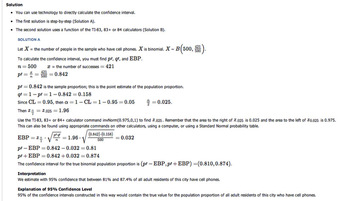{kind=link}
This image shows the solution to our example.
12.4.7. Confidence Interval for a Population Mean, Standard Deviation Known
In this section, we outline an example of finding the confidence interval for a population mean when we know the standard deviation.
Learning Objective
Calculate the confidence interval for a mean given that standard deviation is known
Key Points
- Our example is for scores on exams in statistics that are normally distributed with an unknown population mean and a population standard deviation of 3 points.
- A random sample of 36 scores is taken and gives a sample mean (sample mean score) of 68.
- The 90% confidence interval for the mean score is $(67.1775, 68.8225)$ .
- We are 90% confident that the interval from 67.1775% to 68.8225% contains the true mean score of all the statistics exams: 90% of all confidence intervals constructed in this way contain the true mean statistics exam score.
Key Terms
- confidence interval
- A type of interval estimate of a population parameter used to indicate the reliability of an estimate.
- margin of error
- An expression of the lack of precision in the results obtained from a sample.
Step By Step Example of a Confidence Interval for a Mean—Standard Deviation Known
Suppose scores on exams in statistics are normally distributed with an unknown population mean, and a population standard deviation of 3 points. A random sample of 36 scores is taken and gives a sample mean (sample mean score) of 68. To find a 90% confidence interval for the true (population) mean of statistics exam scores, we have the following guidelines:
- Plan: State what we need to know.
- Model: Think about the assumptions and check the conditions.
- State the parameters and the sampling model.
- Mechanics: $\text{CL} = 0.90$ , so $\alpha = 1-\text{CL} = 1-0.90 = 0.10$ ; $\alpha_{0.05}$ is $1-0.05 = 0.95$ ; So $z_{0.05} = 1.645$
- Conclusion: Interpret your result in the proper context, and relate it to the original question.
1. In our example, we are asked to find a 90% confidence interval for the mean exam score, $\mu$ , of statistics students.
We have a sample of 68 students.
2. We know the population standard deviation is 3. We have the following conditions:
- Randomization Condition: The sample is a random sample.
- Independence Assumption: It is reasonable to think that the exam scores of 36 randomly selected students are independent.
- 10% Condition: We assume the statistic student population is over 360 students, so 36 students is less than 10% of the population.
- Sample Size Condition: Since the distribution of the stress levels is normal, our sample of 36 students is large enough.
3. The conditions are satisfied and $\sigma$ is known, so we will use a confidence interval for a mean with known standard deviation. We need the sample mean and margin of error (ME):
4. below shows the steps for calculating the confidence interval.
The 90% confidence interval for the mean score is $(67.1775, 68.8225)$ .
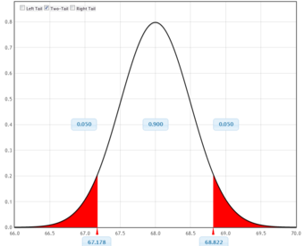{kind=link}
This figure is a graphical representation of the confidence interval we calculated in this example.
5. In conclusion, we are 90% confident that the interval from 67.1775 to 68.8225 contains the true mean score of all the statistics exams. 90% of all confidence intervals constructed in this way contain the true mean statistics exam score.
12.4.8. Confidence Interval for a Population Mean, Standard Deviation Not Known
In this section, we outline an example of finding the confidence interval for a population mean when we do not know the standard deviation.
Learning Objective
Calculate the confidence interval for the mean when the standard deviation is unknown
Key Points
- Our example is for a study of acupuncture to determine how effective it is in relieving pain.
- We measure sensory rates for 15 random subjects, with the results being:8.6, 9.4, 7.9, 6.8, 8.3, 7.3, 9.2, 9.6, 8.7, 11.4, 10.3, 5.4, 8.1, 5.5, 6.9.
- We want to use the sample data to construct a 95% confidence interval for the mean sensory rate for the populations (assumed normal) from which we took this data.
- The 95% confidence interval for the mean score is $(7.30, 9.15)$ .
- We are 95% confident that the interval from 7.30 to 9.15 contains the true mean score of all the sensory rates—95% of all confidence intervals constructed in this way contain the true mean sensory rate score.
Key Terms
- confidence interval
- A type of interval estimate of a population parameter used to indicate the reliability of an estimate.
- margin of error
- An expression of the lack of precision in the results obtained from a sample.
Step By Step Example of a Confidence Interval for a Mean—Standard Deviation Unknown
Suppose you do a study of acupuncture to determine how effective it is in relieving pain. You measure sensory rates for 15 random subjects with the results given below:
8.6, 9.4, 7.9, 6.8, 8.3, 7.3, 9.2, 9.6, 8.7, 11.4, 10.3, 5.4, 8.1, 5.5, 6.9.
Use the sample data to construct a 95% confidence interval for the mean sensory rate for the populations (assumed normal) from which you took this data.
We have the following guidelines for such a problem:
- Plan: State what we need to know.
- Model: Think about the assumptions and check the conditions.
- State the parameters and the sampling model.
- Mechanics: $\text{CL} = 0.95$ , so $\alpha = 1-\text{CL} = 1-0.95 = 0.05$ . The area to the right of $t_{0.25}$ is $1-0.025 = 0.975$ ; so $t_{0.025, 14} = 2.14$ .
- Conclusion: Interpret your result in the proper context, and relate it to the original question.
1. In our example, we are asked to find a 95% confidence interval for the mean sensory rate, $\mu$ , of acupuncture subjects. We have a sample of 15 rates. We do not know the population standard deviation.
2. We have the following conditions:
- Randomization Condition: The sample is a random sample.
- Independence Assumption: It is reasonable to think that the sensory rates of 15 subjects are independent.
- 10% Condition: We assume the acupuncture population is over 150, so 15 subjects is less than 10% of the population.
- Sample Size Condition: Since the distribution of mean sensory rates is normal, our sample of 15 is large enough.
- Nearly Normal Condition: We should do a box plot and histogram to check this. Even though the data is slightly skewed, it is unimodal (and there are no outliers) so we can use the model.
3. The conditions are satisfied and $\sigma$ is unknown, so we will use a confidence interval for a mean with unknown standard deviation. We need the sample mean and margin of error (ME).
4. $\text{ME} = 2.14$
The 95% confidence interval for the mean score is $(7.30, 9.15)$ .
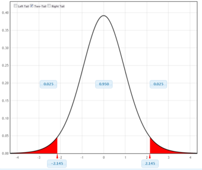{kind=link}
This figure is a graphical representation of the confidence interval we calculated in this example.
5. We are 95% confident that the interval from 7.30 to 9.15 contains the true mean score of all the sensory rates. 95% of all confidence intervals constructed in this way contain the true mean sensory rate score.
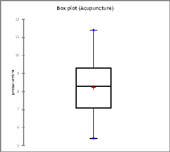{kind=link}
This figure is a box plot for the data set in our example.
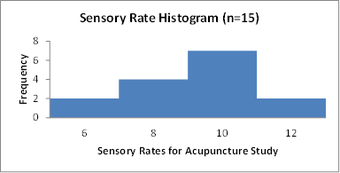{kind=link}
This figure is a histogram for the data set in our example.
12.4.9. Estimating a Population Variance
The chi-square distribution is used to construct confidence intervals for a population variance.
Learning Objective
Construct a confidence interval in a chi-square distribution
Key Points
- The chi-square distribution with $k$ degrees of freedom is the distribution of a sum of the squares of $k$ independent standard normal random variables.
- The chi-square distribution enters all analyses of variance problems via its role in the $F$ -distribution, which is the distribution of the ratio of two independent chi-squared random variables, each divided by their respective degrees of freedom.
- To form a confidence interval for the population variance, use the chi-square distribution with degrees of freedom equal to one less than the sample size: $\text{d.f.} = n-1$ .
Key Terms
- chi-square distribution
- With
$k$ degrees of freedom, the distribution of a sum of the squares of$k$ independent standard normal random variables. - degree of freedom
- Any unrestricted variable in a frequency distribution.
In many manufacturing processes, it is necessary to control the amount that the process varies. For example, an automobile part manufacturer must produce thousands of parts that can be used in the manufacturing process. It is imperative that the parts vary little or not at all. How might the manufacturer measure and, consequently, control the amount of variation in the car parts? A chi-square distribution can be used to construct a confidence interval for this variance.
The chi-square distribution with a $k$ degree of freedom is the distribution of a sum of the squares of $k$ independent standard normal random variables. It is one of the most widely used probability distributions in inferential statistics (e.g., in hypothesis testing or in construction of confidence intervals). The chi-squared distribution is a special case of the gamma distribution and is used in the common chi-squared tests for goodness of fit of an observed distribution to a theoretical one, the independence of two criteria of classification of qualitative data, and in confidence interval estimation for a population standard deviation of a normal distribution from a sample standard deviation. In fact, the chi-square distribution enters all analyses of variance problems via its role in the $F$ -distribution, which is the distribution of the ratio of two independent chi-squared random variables, each divided by their respective degrees of freedom.
The chi-square distribution is a family of curves, each determined by the degrees of freedom. To form a confidence interval for the population variance, use the chi-square distribution with degrees of freedom equal to one less than the sample size:
There are two critical values for each level of confidence:
- The value of ${ X }_{ R }^{ 2 }$ represents the right-tail critical value.
- The value of ${ X }_{ L }^{ 2 }$ represents the left-tail critical value.
Constructing a Confidence Interval
As example, imagine you randomly select and weigh 30 samples of an allergy medication. The sample standard deviation is 1.2 milligrams. Assuming the weights are normally distributed, construct 99% confidence intervals for the population variance and standard deviation.
The areas to the left and right of ${ X }_{ R }^{ 2 }$ and left of ${ X }_{ L }^{ 2 }$ are:
Area to the right of ${ X }_{ R }^{ 2 } = \frac{1-0.99}{2} = 0.005$
Area to the left of ${ X }_{ L }^{ 2 } = \frac{1+0.99}{2} = 0.995$
Using the values $n=30$ , $\text{d.f.} = 29$ and $c=0.99$ , the critical values are 52.336 and 13.121, respectively. Note that these critical values are found on the chi-square critical value table, similar to the table used to find $z$ -scores.
Using these critical values and $s=1.2$ , the confidence interval for $s^2$ is as follows:
Right endpoint:
Left endpoint:
So, with 99% confidence, we can say that the population variance is between 0.798 and 3.183.
12.5. Hypothesis Testing: One Sample
12.5.1. Tests of Significance
Tests of significance are a statistical technology used for ascertaining the likelihood of empirical data, and (from there) for inferring a real effect.
Learning Objective
Examine the idea of statistical significance and the fundamentals behind the corresponding tests.
Key Points
- In relation to Fisher, statistical significance is a statistical assessment of whether observations reflect a pattern rather than just chance.
- In statistical testing, a result is deemed statistically significant if it is so extreme that such a result would be expected to arise simply by chance only in rare circumstances.
- Statistical significance refers to two separate notions: the $p$ -value and the Type I error rate $\alpha$ .
- A typical test of significance comprises two related elements: the calculation of the probability of the data and an assessment of the statistical significance of that probability.
Key Terms
- null hypothesis
- A hypothesis set up to be refuted in order to support an alternative hypothesis; presumed true until statistical evidence in the form of a hypothesis test indicates otherwise.
- statistical significance
- A measure of how unlikely it is that a result has occurred by chance.
Tests of significance are a statistical technology used for ascertaining the likelihood of empirical data, and, from there, for inferring a real effect, such as a correlation between variables or the effectiveness of a new treatment. Beginning circa 1925, Sir Ronald Fisher—an English statistician, evolutionary biologist, geneticist, and eugenicist (shown in )—standardized the interpretation of statistical significance, and was the main driving force behind the popularity of tests of significance in empirical research, especially in the social and behavioral sciences.

Sir Ronald Fisher was an English statistician, evolutionary biologist, geneticist, and eugenicist who standardized the interpretation of statistical significance (starting around 1925), and was the main driving force behind the popularity of tests of significance in empirical research, especially in the social and behavioral sciences.
Statistical significance refers to two separate notions:
- the $p$ -value, (the probability that the observed data would occur by chance in a given true null hypothesis); or
- the Type I error rate $\alpha$ (false positive rate) of a statistical hypothesis test (the probability of incorrectly rejecting a given null hypothesis in favor of a second alternative hypothesis).
In relation to Fisher, statistical significance is a statistical assessment of whether observations reflect a pattern rather than just chance. The fundamental challenge is that any partial picture of a given hypothesis, poll or question is subject to random error. In statistical testing, a result is deemed statistically significant if it is so extreme (without external variables which would influence the correlation results of the test) that such a result would be expected to arise simply by chance only in rare circumstances. Hence the result provides enough evidence to reject the hypothesis of "no effect. "
Reading Tests of Significance
A typical test of significance comprises two related elements:
- the calculation of the probability of the data, and
- an assessment of the statistical significance of that probability.
Probability of the Data
The probability of the data is normally reported using two related statistics:
- a test statistic ($z$ , $t$ , $F$ …), and
- an associated probability ($p$ , $^*$ ).
The information provided by the test statistic is of little immediate usability and can be ignored in most cases. The associated probability, on the other hand, tells how probable the test results are and forms the basis for assessing statistical significance.
Statistical Significance
The statistical significance of the results depends on criteria set up by the researcher beforehand. A result is deemed statistically significant if the probability of the data is small enough, conventionally if it is smaller than 5% ($\text{sig} \leq 0.05$ ). However, conventional thresholds for significance may vary depending on disciplines and researchers. For example, health sciences commonly settle for 10% ($\text{sig} \leq 0.10$ ), while particular researchers may settle for more stringent conventional levels, such as 1% ($\text{sig} \leq 0.01$ ). In any case, p-values ($p$ , $^*$ ) larger than the selected threshold are considered non-significant and are typically ignored from further discussion. $P$ -values smaller than, or equal to, the threshold are considered statistically significant and interpreted accordingly. A statistically significant result normally leads to an appropriate inference of real effects, unless there are suspicions that such results may be anomalous. Notice that the criteria used for assessing statistical significance may not be made explicit in a research article when the researcher is using conventional assessment criteria.
As an example, consider the following test statistics:
In this example, the test statistics are $z$ (normality test), $F$ (equality of variance test), and $r$ (correlation). Each $p$ -value indicates, with more or less precision, the probability of its test statistic under the corresponding null hypothesis. Assuming a conventional 5% level of significance ($\text{sig} \leq 0.05$ ), all tests are, thus, statistically significant. We can thus infer that we have measured a real effect rather than a random fluctuation in the data. When interpreting the results, the correlation statistic provides information which is directly usable. We could thus infer a medium-to-high correlation between two variables. The test statistics $z$ and $F$ , on the other hand, do not provide immediate useful information, and any further interpretation needs of descriptive statistics. For example, skewness and kurtosis are necessary for interpreting non-normality $z$ , and group means and variances are necessary for describing group differences $F$ .
12.5.2. Elements of a Hypothesis Test
A statistical hypothesis test is a method of making decisions using data from a scientific study.
Learning Objective
Outline the steps of a standard hypothesis test.
Key Points
- Statistical hypothesis tests define a procedure that controls (fixes) the probability of incorrectly deciding that a default position (null hypothesis) is incorrect based on how likely it would be for a set of observations to occur if the null hypothesis were true.
- The first step in a hypothesis test is to state the relevant null and alternative hypotheses; the second is to consider the statistical assumptions being made about the sample in doing the test.
- Next, the relevant test statistic is stated, and its distribution is derived under the null hypothesis from the assumptions.
- After that, the relevant significance level and critical region are determined.
- Finally, values of the test statistic are observed and the decision is made whether to either reject the null hypothesis in favor of the alternative or not reject it.
Key Terms
- significance level
- A measure of how likely it is to draw a false conclusion in a statistical test, when the results are really just random variations.
- null hypothesis
- A hypothesis set up to be refuted in order to support an alternative hypothesis; presumed true until statistical evidence in the form of a hypothesis test indicates otherwise.
Example
- In a famous example of hypothesis testing, known as the Lady tasting tea example, a female colleague of Sir Ronald Fisher claimed to be able to tell whether the tea or the milk was added first to a cup. Fisher proposed to give her eight cups, four of each variety, in random order. One could then ask what the probability was for her getting the number she got correct, but just by chance. The null hypothesis was that the Lady had no such ability. The test statistic was a simple count of the number of successes in selecting the 4 cups. The critical region was the single case of 4 successes of 4 possible based on a conventional probability criterion ($< 5\%$ ; $\frac{1}{70} \approx 1.4\%$ ). Fisher asserted that no alternative hypothesis was (ever) required. The lady correctly identified every cup, which would be considered a statistically significant result.
A statistical hypothesis test is a method of making decisions using data from a scientific study. In statistics, a result is called statistically significant if it has been predicted as unlikely to have occurred by chance alone, according to a pre-determined threshold probability—the significance level. Statistical hypothesis testing is sometimes called confirmatory data analysis, in contrast to exploratory data analysis, which may not have pre-specified hypotheses. Statistical hypothesis testing is a key technique of frequentist inference.
Statistical hypothesis tests define a procedure that controls (fixes) the probability of incorrectly deciding that a default position (null hypothesis) is incorrect based on how likely it would be for a set of observations to occur if the null hypothesis were true. Note that this probability of making an incorrect decision is not the probability that the null hypothesis is true, nor whether any specific alternative hypothesis is true. This contrasts with other possible techniques of decision theory in which the null and alternative hypothesis are treated on a more equal basis.
The Testing Process
The typical line of reasoning in a hypothesis test is as follows:
- There is an initial research hypothesis of which the truth is unknown.
- The first step is to state the relevant null and alternative hypotheses. This is important as mis-stating the hypotheses will muddy the rest of the process.
- The second step is to consider the statistical assumptions being made about the sample in doing the test—for example, assumptions about the statistical independence or about the form of the distributions of the observations. This is important because invalid assumptions will mean that the results of the test are invalid.
- Decide which test is appropriate, and state the relevant test statistic $T$ .
- Derive the distribution of the test statistic under the null hypothesis from the assumptions.
- Select a significance level ($\alpha$ ), a probability threshold below which the null hypothesis will be rejected. Common values are 5% and 1%.
- The distribution of the test statistic under the null hypothesis partitions the possible values of $T$ into those for which the null hypothesis is rejected, the so called critical region, and those for which it is not. The probability of the critical region is $\alpha$ .
- Compute from the observations the observed value $t_\text{obs}$ of the test statistic $T$ .
- Decide to either reject the null hypothesis in favor of the alternative or not reject it. The decision rule is to reject the null hypothesis $H_0$ if the observed value $t_\text{obs}$ is in the critical region, and to accept or "fail to reject" the hypothesis otherwise.
An alternative process is commonly used:
7. Compute from the observations the observed value $t_\text{obs}$ of the test statistic $T$ .
8. From the statistic calculate a probability of the observation under the null hypothesis (the $p$ -value).
9. Reject the null hypothesis in favor of the alternative or not reject it. The decision rule is to reject the null hypothesis if and only if the $p$ -value is less than the significance level (the selected probability) threshold.
The two processes are equivalent. The former process was advantageous in the past when only tables of test statistics at common probability thresholds were available. It allowed a decision to be made without the calculation of a probability. It was adequate for classwork and for operational use, but it was deficient for reporting results. The latter process relied on extensive tables or on computational support not always available. The calculations are now trivially performed with appropriate software.

This table shows the distribution of permutations in our tea tasting example.
12.5.3. The Null and the Alternative
The alternative hypothesis and the null hypothesis are the two rival hypotheses that are compared by a statistical hypothesis test.
Learning Objective
Differentiate between the null and alternative hypotheses and understand their implications in hypothesis testing.
Key Points
- The null hypothesis refers to a general or default position: that there is no relationship between two measured phenomena, or that a potential medical treatment has no effect.
- In the testing approach of Ronald Fisher, a null hypothesis is potentially rejected or disproved, but never accepted or proved.
- In the hypothesis testing approach of Jerzy Neyman and Egon Pearson, a null hypothesis is contrasted with an alternative hypothesis, and these are decided between on the basis of data, with certain error rates.
- The four principal types of alternative hypotheses are: point, one-tailed directional, two-tailed directional, and non-directional.
Key Terms
- alternative hypothesis
- a rival hypothesis to the null hypothesis, whose likelihoods are compared by a statistical hypothesis test
- null hypothesis
- A hypothesis set up to be refuted in order to support an alternative hypothesis; presumed true until statistical evidence in the form of a hypothesis test indicates otherwise.
Example
- In an issue of U.S. News and World Report, an article on school standards stated that about half of all students in France, Germany, and Israel take advanced placement exams and a third pass. The same article stated that 6.6% of U. S. students take advanced placement exams and 4.4 % pass. Test if the percentage of U.S. students who take advanced placement exams is more than 6.6%. $H_0: p=0.066 | H_a:p>0.066$
In statistical hypothesis testing, the alternative hypothesis and the null hypothesis are the two rival hypotheses which are compared by a statistical hypothesis test. An example might be where water quality in a stream has been observed over many years. A test can be made of the null hypothesis (that there is no change in quality between the first and second halves of the data) against the alternative hypothesis (that the quality is poorer in the second half of the record).
The Null Hypothesis
The null hypothesis refers to a general or default position: that there is no relationship between two measured phenomena, or that a potential medical treatment has no effect. Rejecting or disproving the null hypothesis (and thus concluding that there are grounds for believing that there is a relationship between two phenomena or that a potential treatment has a measurable effect) is a central task in the modern practice of science and gives a precise sense in which a claim is capable of being proven false.
The concept of a null hypothesis is used differently in two approaches to statistical inference, though the same term is used, a problem shared with statistical significance. In the significance testing approach of Ronald Fisher, a null hypothesis is potentially rejected or disproved on the basis of data that is significantly under its assumption, but never accepted or proved. In the hypothesis testing approach of Jerzy Neyman and Egon Pearson, a null hypothesis is contrasted with an alternative hypothesis, and these are decided between on the basis of data, with certain error rates.
{kind=link}
Sir Ronald Fisher, pictured here, was the first to coin the term null hypothesis.
The Alternative Hypothesis
In the case of a scalar parameter, there are four principal types of alternative hypothesis:
- Point. Point alternative hypotheses occur when the hypothesis test is framed so that the population distribution under the alternative hypothesis is a fully defined distribution, with no unknown parameters. Such hypotheses are usually of no practical interest but are fundamental to theoretical considerations of statistical inference.
- One-tailed directional. A one-tailed directional alternative hypothesis is concerned with the region of rejection for only one tail of the sampling distribution.
- Two-tailed directional. A two-tailed directional alternative hypothesis is concerned with both regions of rejection of the sampling distribution.
- Non-directional. A non-directional alternative hypothesis is not concerned with either region of rejection, but, rather, only that the null hypothesis is not true.
The concept of an alternative hypothesis forms a major component in modern statistical hypothesis testing; however, it was not part of Ronald Fisher's formulation of statistical hypothesis testing. In Fisher's approach to testing, the central idea is to assess whether the observed dataset could have resulted from chance if the null hypothesis were assumed to hold, notionally without preconceptions about what other model might hold. Modern statistical hypothesis testing accommodates this type of test, since the alternative hypothesis can be just the negation of the null hypothesis.
The Test
A hypothesis test begins by consider the null and alternate hypotheses, each containing an opposing viewpoint.
$H_0$ : The null hypothesis: It is a statement about the population that will be assumed to be true unless it can be shown to be incorrect beyond a reasonable doubt.
$H_a$ : The alternate hypothesis: It is a claim about the population that is contradictory to $H_0$ and what we conclude when we reject $H_0$ .
Since the null and alternate hypotheses are contradictory, we must examine evidence to decide if there is enough evidence to reject the null hypothesis or not. The evidence is in the form of sample data.
We can make a decision after determining which hypothesis the sample supports (there are two options for a decision). They are "reject $H_0$ " if the sample information favors the alternate hypothesis or "do not reject $H_0$ " or "fail to reject $H_0$ " if the sample information is insufficient to reject the null hypothesis.
Example 1
$H_0$ : No more than 30% of the registered voters in Santa Clara County voted in the primary election.
$H_a$ : More than 30% of the registered voters in Santa Clara County voted in the primary election.
Example 2
We want to test whether the mean grade point average in American colleges is different from 2.0 (out of 4.0).
Example 3
We want to test if college students take less than five years to graduate from college, on the average.
12.5.4. Type I and Type II Errors
If the result of a hypothesis test does not correspond with reality, then an error has occurred.
Learning Objective
Distinguish between Type I and Type II error and discuss the consequences of each.
Key Points
- A type I error occurs when the null hypothesis ($H_0$ ) is true but is rejected.
- The rate of the type I error is called the size of the test and denoted by the Greek letter $\alpha$ (alpha).
- A type II error occurs when the null hypothesis is false but erroneously fails to be rejected.
- The rate of the type II error is denoted by the Greek letter $\beta$ (beta) and related to the power of a test (which equals $1-\beta$ ).
Key Terms
- Type I error
- Rejecting the null hypothesis when the null hypothesis is true.
- type II error
- Accepting the null hypothesis when the null hypothesis is false.
The notion of statistical error is an integral part of hypothesis testing. The test requires an unambiguous statement of a null hypothesis, which usually corresponds to a default "state of nature" -- for example "this person is healthy," "this accused is not guilty" or "this product is not broken. " An alternative hypothesis is the negation of null hypothesis (for example, "this person is not healthy," "this accused is guilty," or "this product is broken"). The result of the test may be negative, relative to null hypothesis (not healthy, guilty, broken) or positive (healthy, not guilty, not broken).
If the result of the test corresponds with reality, then a correct decision has been made. However, if the result of the test does not correspond with reality, then an error has occurred. Due to the statistical nature of a test, the result is never, except in very rare cases, free of error. The two types of error are distinguished as type I error and type II error. What we actually call type I or type II error depends directly on the null hypothesis, and negation of the null hypothesis causes type I and type II errors to switch roles.
Type I Error
A type I error occurs when the null hypothesis ($H_0$ ) is true but is rejected. It is asserting something that is absent, a false hit. A type I error may be compared with a so-called false positive (a result that indicates that a given condition is present when it actually is not present) in tests where a single condition is tested for. A type I error can also be said to occur when we believe a falsehood. In terms of folk tales, an investigator may be "crying wolf" without a wolf in sight (raising a false alarm). $H_0$ : no wolf.
The rate of the type I error is called the size of the test and denoted by the Greek letter $\alpha$ (alpha). It usually equals the significance level of a test. In the case of a simple null hypothesis, $\alpha$ is the probability of a type I error. If the null hypothesis is composite, $\alpha$ is the maximum of the possible probabilities of a type I error.
False Positive Error
A false positive error, commonly called a "false alarm," is a result that indicates a given condition has been fulfilled when it actually has not been fulfilled. In the case of "crying wolf," the condition tested for was "is there a wolf near the herd? " The actual result was that there had not been a wolf near the herd. The shepherd wrongly indicated there was one, by crying wolf.
A false positive error is a type I error where the test is checking a single condition and results in an affirmative or negative decision, usually designated as "true or false."
Type II Error
A type II error occurs when the null hypothesis is false but erroneously fails to be rejected. It is failing to assert what is present, a miss. A type II error may be compared with a so-called false negative (where an actual "hit" was disregarded by the test and seen as a "miss") in a test checking for a single condition with a definitive result of true or false. A type II error is committed when we fail to believe a truth. In terms of folk tales, an investigator may fail to see the wolf ("failing to raise an alarm"). Again, $H_0$ : no wolf.
The rate of the type II error is denoted by the Greek letter $\beta$ (beta) and related to the power of a test (which equals $1-\beta$ ).
False Negative Error
A false negative error is where a test result indicates that a condition failed, while it actually was successful. A common example is a guilty prisoner freed from jail. The condition: "Is the prisoner guilty? " actually had a positive result (yes, he is guilty). But the test failed to realize this and wrongly decided the prisoner was not guilty.
A false negative error is a type II error occurring in test steps where a single condition is checked for and the result can either be positive or negative.
Consequences of Type I and Type II Errors
Both types of errors are problems for individuals, corporations, and data analysis. A false positive (with null hypothesis of health) in medicine causes unnecessary worry or treatment, while a false negative gives the patient the dangerous illusion of good health and the patient might not get an available treatment. A false positive in manufacturing quality control (with a null hypothesis of a product being well made) discards a product that is actually well made, while a false negative stamps a broken product as operational. A false positive (with null hypothesis of no effect) in scientific research suggest an effect that is not actually there, while a false negative fails to detect an effect that is there.
Based on the real-life consequences of an error, one type may be more serious than the other. For example, NASA engineers would prefer to waste some money and throw out an electronic circuit that is really fine (null hypothesis: not broken; reality: not broken; test find: broken; action: thrown out; error: type I, false positive) than to use one on a spacecraft that is actually broken. On the other hand, criminal courts set a high bar for proof and procedure and sometimes acquit someone who is guilty (null hypothesis: innocent; reality: guilty; test find: not guilty; action: acquit; error: type II, false negative) rather than convict someone who is innocent.
Minimizing errors of decision is not a simple issue. For any given sample size the effort to reduce one type of error generally results in increasing the other type of error. The only way to minimize both types of error, without just improving the test, is to increase the sample size, and this may not be feasible. An example of acceptable type I error is discussed below.
{kind=link}
NASA engineers would prefer to waste some money and throw out an electronic circuit that is really fine than to use one on a spacecraft that is actually broken. This is an example of type I error that is acceptable.
12.5.5. Significance Levels
If a test of significance gives a $p$ -value lower than or equal to the significance level, the null hypothesis is rejected at that level.
Learning Objective
Outline the process for calculating a
Key Points
- Significance levels may be used either as a cutoff mark for a $p$ -value or as a desired parameter in the test design.
- To compute a $p$ -value from the test statistic, one must simply sum (or integrate over) the probabilities of more extreme events occurring.
- In some situations, it is convenient to express the complementary statistical significance (so 0.95 instead of 0.05), which corresponds to a quantile of the test statistic.
- Popular levels of significance are 10% (0.1), 5% (0.05), 1% (0.01), 0.5% (0.005), and 0.1% (0.001).
- The lower the significance level chosen, the stronger the evidence required.
Key Terms
- Student's t-test
- Any statistical hypothesis test in which the test statistic follows a Student's
$t$ distribution if the null hypothesis is supported. - p-value
- The probability of obtaining a test statistic at least as extreme as the one that was actually observed, assuming that the null hypothesis is true.
A fixed number, most often 0.05, is referred to as a significance level or level of significance. Such a number may be used either as a cutoff mark for a $p$ -value or as a desired parameter in the test design.
$p$ -Value
In brief, the (left-tailed) $p$ -value is the quantile of the value of the test statistic, with respect to the sampling distribution under the null hypothesis. The right-tailed $p$-value is one minus the quantile, while the two-tailed $p$ -value is twice whichever of these is smaller. Computing a $p$-value requires a null hypothesis, a test statistic (together with deciding if one is doing one-tailed test or a two-tailed test), and data. The key preparatory computation is computing the cumulative distribution function (CDF) of the sampling distribution of the test statistic under the null hypothesis, which may depend on parameters in the null distribution and the number of samples in the data. The test statistic is then computed for the actual data and its quantile is computed by inputting it into the CDF. An example of a $p$ -value graph is shown below.
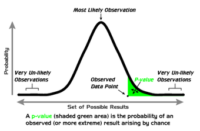{kind=link}
Example of a $p$ -value computation. The vertical coordinate is the probability density of each outcome, computed under the null hypothesis. The $p$ -value is the area under the curve past the observed data point.
Hypothesis tests, such as Student's $t$ -test, typically produce test statistics whose sampling distributions under the null hypothesis are known. For instance, in the example of flipping a coin, the test statistic is the number of heads produced. This number follows a known binomial distribution if the coin is fair, and so the probability of any particular combination of heads and tails can be computed. To compute a $p$ -value from the test statistic, one must simply sum (or integrate over) the probabilities of more extreme events occurring. For commonly used statistical tests, test statistics and their corresponding $p$ -values are often tabulated in textbooks and reference works.
Using Significance Levels
Popular levels of significance are 10% (0.1), 5% (0.05), 1% (0.01), 0.5% (0.005), and 0.1% (0.001). If a test of significance gives a $p$ -value lower than or equal to the significance level, the null hypothesis is rejected at that level. Such results are informally referred to as statistically significant (at the $p=0.05$ level, etc.). For example, if someone argues that "there's only one chance in a thousand this could have happened by coincidence", a 0.001 level of statistical significance is being stated. The lower the significance level chosen, the stronger the evidence required. The choice of significance level is somewhat arbitrary, but for many applications, a level of 5% is chosen by convention.
In some situations, it is convenient to express the complementary statistical significance (so 0.95 instead of 0.05), which corresponds to a quantile of the test statistic. In general, when interpreting a stated significance, one must be careful to make precise note of what is being tested statistically.
Different levels of cutoff trade off countervailing effects. Lower levels – such as 0.01 instead of 0.05 – are stricter and increase confidence in the determination of significance, but they run an increased risk of failing to reject a false null hypothesis. Evaluation of a given $p$ -value of data requires a degree of judgment; and rather than a strict cutoff, one may instead simply consider lower $p$ -values as more significant.
12.5.6. Directional Hypotheses and One-Tailed Tests
A one-tailed hypothesis is one in which the value of a parameter is either above or equal to a certain value or below or equal to a certain value.
Learning Objective
Differentiate a one-tailed from a two-tailed hypothesis test.
Key Points
- A one-tailed test or two-tailed test are alternative ways of computing the statistical significance of a data set in terms of a test statistic, depending on whether only one direction is considered extreme (and unlikely) or both directions are considered extreme.
- The terminology "tail" is used because the extremes of distributions are often small, as in the normal distribution or "bell curve".
- If the test statistic is always positive (or zero), only the one-tailed test is generally applicable, while if the test statistic can assume positive and negative values, both the one-tailed and two-tailed test are of use.
- Formulating the hypothesis as a "better than" comparison is said to give the hypothesis directionality.
- One-tailed tests are used for asymmetric distributions that have a single tail (such as the chi-squared distribution, which is common in measuring goodness-of-fit) or for one side of a distribution that has two tails (such as the normal distribution, which is common in estimating location).
Key Terms
- one-tailed hypothesis
- a hypothesis in which the value of a parameter is specified as being either above or equal to a certain value or below or equal to a certain value
- null hypothesis
- A hypothesis set up to be refuted in order to support an alternative hypothesis; presumed true until statistical evidence in the form of a hypothesis test indicates otherwise.
When putting together a hypothesis test, consideration of directionality is critical. The vast majority of hypothesis tests involve either a point hypothesis, two-tailed hypothesis or one-tailed hypothesis. A one-tailed test or two-tailed test are alternative ways of computing the statistical significance of a data set in terms of a test statistic, depending on whether only one direction is considered extreme (and unlikely) or both directions are considered extreme. The terminology "tail" is used because the extremes of distributions are often small, as in the normal distribution or "bell curve" . If the test statistic is always positive (or zero), only the one-tailed test is generally applicable, while if the test statistic can assume positive and negative values, both the one-tailed and two-tailed test are of use.
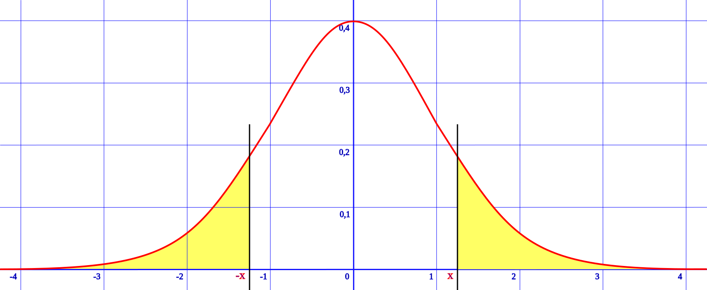{kind=link}
A two-tailed test corresponds to both extreme negative and extreme positive directions of the test statistic, here the normal distribution.
A one-tailed hypothesis is a hypothesis in which the value of a parameter is specified as being either:
- above or equal to a certain value, or
- below or equal to a certain value.
{kind=link}
A one-tailed test, showing the $p$ -value as the size of one tail.
An example of a one-tailed null hypothesis, in the medical context, would be that an existing treatment, $A$ , is no worse than a new treatment, $B$ . The corresponding alternative hypothesis would be that $B$ is better than $A$ . Here, if the null hypothesis is not rejected (i.e., there is no reason to reject the hypothesis that $A$ is at least as good as $B$ ) the conclusion would be that treatment $A$ should continue to be used. If the null hypothesis were rejected (i.e., there is evidence that $B$ is better than $A$ ) the result would be that treatment $B$ would be used in future. An appropriate hypothesis test would look for evidence that $B$ is better than $A$ not for evidence that the outcomes of treatments $A$ and $B$ are different. Formulating the hypothesis as a "better than" comparison is said to give the hypothesis directionality.
Applications of One-Tailed Tests
One-tailed tests are used for asymmetric distributions that have a single tail (such as the chi-squared distribution, which is common in measuring goodness-of-fit) or for one side of a distribution that has two tails (such as the normal distribution, which is common in estimating location). This corresponds to specifying a direction. Two-tailed tests are only applicable when there are two tails, such as in the normal distribution, and correspond to considering either direction significant.
In the approach of Ronald Fisher, the null hypothesis $H_0$ will be rejected when the $p$ -value of the test statistic is sufficiently extreme (in its sampling distribution) and thus judged unlikely to be the result of chance. In a one-tailed test, "extreme" is decided beforehand as either meaning "sufficiently small" or "sufficiently large" – values in the other direction are considered insignificant. In a two-tailed test, "extreme" means "either sufficiently small or sufficiently large", and values in either direction are considered significant. For a given test statistic there is a single two-tailed test and two one-tailed tests (one each for either direction). Given data of a given significance level in a two-tailed test for a test statistic, in the corresponding one-tailed tests for the same test statistic it will be considered either twice as significant (half the $p$ -value) if the data is in the direction specified by the test or not significant at all ($p$ -value above 0.5) if the data is in the direction opposite that specified by the test.
For example, if flipping a coin, testing whether it is biased towards heads is a one-tailed test. Getting data of "all heads" would be seen as highly significant, while getting data of "all tails" would not be significant at all ($p=1$ ). By contrast, testing whether it is biased in either direction is a two-tailed test, and either "all heads" or "all tails" would both be seen as highly significant data.
12.5.7. Creating a Hypothesis Test
Creating a hypothesis test generally follows a five-step procedure.
Learning Objective
Design a hypothesis test utilizing the five steps listed in this text.
Key Points
- The first step is to set up or assume a null hypothesis.
- The second step is to decide on an appropriate level of significance for assessing results.
- The third step is to decide between a one-tailed or a two-tailed statistical test.
- The fourth step is to interpret your results -- namely, your $p$ -value and observed test statistics.
- The final step is to write a report summarizing the statistical significance of your results.
Key Term
- null hypothesis
- A hypothesis set up to be refuted in order to support an alternative hypothesis; presumed true until statistical evidence in the form of a hypothesis test indicates otherwise.
The creation of a hypothesis test generally follows a five-step procedure as detailed below:
1. Set up or assume a statistical null hypothesis ($H_0$ ). Setting up a null hypothesis helps clarify the aim of the research. Such a hypothesis can also be assumed, given that null hypotheses, in general, are nil hypotheses and can be easily "reconstructed. " Examples of null hypotheses include:
- $H_0$ : Given our sample results, we will be unable to infer a significant correlation between the dependent and independent research variables.
- $H_0$ : It will not be possible to infer any statistically significant mean differences between the treatment and the control groups.
- $H_0$ : We will not be able to infer that this variable's distribution significantly departs from normality.
2. Decide on an appropriate level of significance for assessing results. Conventional levels are 5% ($\text{sig}<0.05$ , meaning that results have a probability under the null hypothesis of less than 1 time in 20) or 1% ($\text{sig}<0.01$ , meaning that results have a probability under the null hypothesis of less than 1 time in 100). However, the level of significance can be any "threshold" the researcher considers appropriate for the intended research (thus, it could be 0.02, 0.001, 0.0001, etc). If required, label such level of significance as "significance" or "sig" (i.e., $\text{sig}<0.05$ ). Avoid labeling it as "$p$ " (so not to confuse it with $p$ -values) or as "alpha" or "$\alpha$ " (so not to confuse it with alpha tolerance errors).
3. Decide between a one-tailed or a two-tailed statistical test. A one-tailed test assesses whether the observed results are either significantly higher or smaller than the null hypothesis, but not both. Thus, one-tailed tests are appropriate when testing that results will only be higher or smaller than null results, or when the only interest is on interventions which will result in higher or smaller outputs. A two-tailed test, on the other hand, assesses both possibilities at once. It achieves so by dividing the total level of significance between both tails, which also implies that it is more difficult to get significant results than with a one-tailed test. Thus, two-tailed tests are appropriate when the direction of the results is not known, or when the researcher wants to check both possibilities in order to prevent making mistakes.
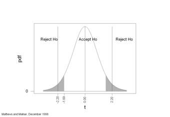{kind=link}
This image shows a graph representation of a two-tailed hypothesis test.
4. Interpret results:
- Obtain and report the probability of the data. It is recommended to use the exact probability of the data, that is the '$p$ -value' (e.g., $p=0.011$ , or $p=0.51$ ). This exact probability is normally provided together with the pertinent statistic test ($z$ , $t$ , $F$ …).
- $p$ -values can be interpreted as the probability of getting the observed or more extreme results under the null hypothesis (e.g., $p=0.033$ means that 3.3 times in 100, or 1 time in 33, we will obtain the same or more extreme results as normal [or random] fluctuation under the null).
- $p$ -values are considered statistically significant if they are equal to or smaller than the chosen significance level. This is the actual test of significance, as it interprets those $p$ -values falling beyond the threshold as "rare" enough as to deserve attention.
- If results are accepted as statistically significant, it can be inferred that the null hypothesis is not explanatory enough for the observed data.
5. Write Up the Report:
- All test statistics and associated exact $p$ -values can be reported as descriptive statistics, independently of whether they are statistically significant or not.
- Significant results can be reported in the line of "either an exceptionally rare chance has occurred, or the theory of random distribution is not true. "
- Significant results can also be reported in the line of "without the treatment I administered, experimental results as extreme as the ones I obtained would occur only about 3 times in 1000. Therefore, I conclude that my treatment has a definite effect.". Further, "this correlation is so extreme that it would only occur about 1 time in 100 ($p=0.01$ ). Thus, it can be inferred that there is a significant correlation between these variables.
12.5.8. Testing a Single Proportion
Here we will evaluate an example of hypothesis testing for a single proportion.
Learning Objective
Construct and evaluate a hypothesis test for a single proportion.
Key Points
- Our hypothesis test involves the following steps: stating the question, planning the test, stating the hypotheses, determine if we are meeting the test criteria, and computing the test statistic.
- We continue the test by: determining the critical region, sketching the test statistic and critical region, determining the $p$ -value, stating whether we reject or fail to reject the null hypothesis and making meaningful conclusions.
- Our example revolves around Michele, a statistics student who replicates a study conducted by Cell Phone Market Research Company in 2010 that found that 30% of households in the United States own at least three cell phones.
- Michele tests to see if the proportion of households owning at least three cell phones in her home town is higher than the national average.
- The sample data does not show sufficient evidence that the percentage of households in Michele's city that have at least three cell phones is more than 30%; therefore, we do not have strong evidence against the null hypothesis.
Key Term
- null hypothesis
- A hypothesis set up to be refuted in order to support an alternative hypothesis; presumed true until statistical evidence in the form of a hypothesis test indicates otherwise.
Hypothesis Test for a Single Proportion
For an example of a hypothesis test for a single proportion, consider the following. Cell Phone Market Research Company conducted a national survey in 2010 and found the 30% of households in the United States owned at least three cell phones. Michele, a statistics student, decides to replicate this study where she lives. She conducts a random survey of 150 households in her town and finds that 53 own at least three cell phones. Is this strong evidence that the proportion of households in Michele's town that own at least three cell phones is more than the national percentage? Test at a 5% significance level.
1. State the question: State what we want to determine and what level of confidence is important in our decision.
We are asked to test the hypothesis that the proportion of households that own at least three cell phones is more than 30%. The parameter of interest, $p$ , is the proportion of households that own at least three cell phones.
2. Plan: Based on the above question(s) and the answer to the following questions, decide which test you will be performing. Is the problem about numerical or categorical data? If the data is numerical is the population standard deviation known? Do you have one group or two groups?
We have univariate, categorical data. Therefore, we can perform a one proportion $z$ -test to test this belief. Our model will be:
3. Hypotheses: State the null and alternative hypotheses in words then in symbolic form:
- Express the hypothesis to be tested in symbolic form.
- Write a symbolic expression that must be true when the original claims is false.
- The null hypothesis is the statement which includes the equality.
- The alternative hypothesis is the statement without the equality.
Null Hypothesis in words: The null hypothesis is that the true population proportion of households that own at least three cell phones is equal to 30%.
Null Hypothesis symbolically: $H_0: p=30\%$
Alternative Hypothesis in words: The alternative hypothesis is that the population proportion of households that own at least three cell phones is more than 30%.
Alternative Hypothesis symbolically: $H_0: p>30\%$
4. The criteria for the inferential test stated above: Think about the assumptions and check the conditions.
Randomization Condition: The problem tells us Michele uses a random sample.
Independence Assumption: When we know we have a random sample, it is likely that outcomes are independent. There is no reason to think how many cell phones one household owns has any bearing on the next household.
10% Condition: We will assume that the city in which Michele lives is large and that 150 households is less than 10% of all households in her community.
Success/Failure: $p_0(n) > 10$ and $(1-p_0)n>10$
To meet this condition, both the success and failure products must be larger than 10 ($p_0$ is the value of the null hypothesis in decimal form. )
$0.3(150) = 45>10$ and $(1-0.3)(150) = 105>10$
5. Compute the test statistic:
The conditions are satisfied, so we will use a hypothesis test for a single proportion to test the null hypothesis. For this calculation we need the sample proportion, $\hat{p}$ :
$\displaystyle \hat { p } =\frac { 53 }{ 100 } =0.3533$ ,
$\displaystyle z=\frac { \hat { p } -{ p }_{ 0 } }{ \sqrt { \dfrac { { p }_{ 0 }(1-{ p }_{ 0 }) }{ n } } } =\frac { 0.3533-0.3 }{ \sqrt { \dfrac { 0.3(1-0.3) }{ 150 } } } =\frac { 0.0533 }{ 0.0374 } =1.425$ .
6. Determine the Critical Region(s): Based on our hypotheses are we performing a left-tailed, right tailed or two-tailed test?
We will perform a right-tailed test, since we are only concerned with the proportion being more than 30% of households.
7. Sketch the test statistic and critical region: Look up the probability on the table, as shown in:
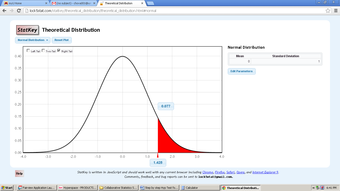{kind=link}
This image shows a graph of the critical region for the test statistic in our example.
8. Determine the $p$ -value:
9. State whether you reject or fail to reject the null hypothesis:
Since the probability is greater than the critical value of 5%, we will fail to reject the null hypothesis.
10. Conclusion: Interpret your result in the proper context, and relate it to the original question.
Since the probability is greater than 5%, this is not considered a rare event and the large probability tells us not to reject the null hypothesis. The $p$ -value tells us that there is a 7.7% chance of obtaining our sample percentage of 35.33% if the null hypothesis is true. The sample data do not show sufficient evidence that the percentage of households in Michele's city that have at least three cell phones is more than 30%. We do not have strong evidence against the null hypothesis.
Note that if evidence exists in support of rejecting the null hypothesis, the following steps are then required:
11. Calculate and display your confidence interval for the alternative hypothesis.
12. State your conclusion based on your confidence interval.
12.5.9. Testing a Single Mean
In this section we will evaluate an example of hypothesis testing for a single mean.
Learning Objective
Construct and evaluate a hypothesis test for a single mean.
Key Points
- Our hypothesis test involves the following steps: stating the question, planning the test, stating the hypotheses, determine if we are meeting the test criteria, and computing the test statistic.
- We continue the test by: determining the critical region, sketching the test statistic and critical region, determining the $p$ -value, stating whether we reject or fail to reject the null hypothesis and making meaningful conclusions.
- Our example revolves around statistics students believe that the mean score on the first statistics test is 65 and a statistics instructor thinks the mean score is lower than 65.
- Since the resulting probability is greater than than the critical value of 5%, we will fail to reject the null hypothesis.
Key Term
- null hypothesis
- A hypothesis set up to be refuted in order to support an alternative hypothesis; presumed true until statistical evidence in the form of a hypothesis test indicates otherwise.
A Hypothesis Test for a Single Mean—Standard Deviation Unknown
As an example of a hypothesis test for a single mean, consider the following. Statistics students believe that the mean score on the first statistics test is 65. A statistics instructor thinks the mean score is lower than 65. He randomly samples 10 statistics student scores and obtains the scores [62, 54, 64, 58, 70, 67, 63, 59, 69, 64]. He performs a hypothesis test using a 5% level of significance.
1. State the question: State what we want to determine and what level of significance is important in your decision.
We are asked to test the hypothesis that the mean statistics score, $\mu$ , is less than 65. We do not know the population standard deviation. The significance level is 5%.
2. Plan: Based on the above question(s) and the answer to the following questions, decide which test you will be performing. Is the problem about numerical or categorical data? If the data is numerical is the population standard deviation known? Do you have one group or two groups? What type of model is this?
We have univariate, quantitative data. We have a sample of 10 scores. We do not know the population standard deviation. Therefore, we can perform a Student's $t$ -test, with $n-1$ , 9 degrees of freedom. Our model will be:
3. Hypotheses: State the null and alternative hypotheses in words and then in symbolic form Express the hypothesis to be tested in symbolic form. Write a symbolic expression that must be true when the original claim is false. The null hypothesis is the statement which included the equality. The alternative hypothesis is the statement without the equality.
Null hypothesis in words: The null hypothesis is that the true mean of the statistics exam is equal to 65.
Null hypothesis symbolically: $H_0: \mu =65$
Alternative hypothesis in words: The alternative is that the true mean statistics score on average is less than 65.
Alternative hypothesis symbolically: $H_a: \mu <65$
4. The criteria for the inferential test stated above: Think about the assumptions and check the conditions. If your assumptions include the need for particular types of data distribution, construct appropriate graphs or charts.
Randomization Condition: The sample is a random sample.
Independence Assumption: It is reasonable to think that the scores of students are independent in a random sample. There is no reason to think the score of one exam has any bearing on the score of another exam.
10% Condition: We assume the number of statistic students is more than 100, so 10 scores is less than 10% of the population.
Nearly Normal Condition: We should look at a boxplot and histogram for this, shown respectively in and .
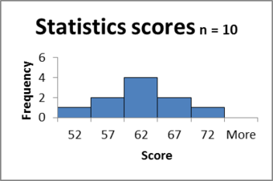{kind=link}
This figure shows a histogram for the dataset in our example.
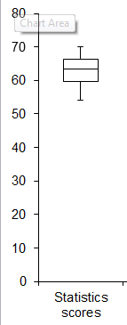{kind=link}
This figure shows a boxplot for the dataset in our example.
Since there are no outliers and the histogram is bell shaped, the condition is satisfied.
Sample Size Condition: Since the distribution of the scores is normal, our sample of 10 scores is large enough.
5. Compute the test statistic:
The conditions are satisfied and σ is unknown, so we will use a hypothesis test for a mean with unknown standard deviation. We need the sample mean, sample standard deviation and Standard Error (SE).
$\displaystyle t=\frac { x-\mu }{ \frac { s }{ \sqrt { n } } } =\frac { 63-65 }{ 1.585 } =-1.2618$ .
6. Determine the Critical Region(s): Based on your hypotheses, should we perform a left-tailed, right-tailed, or two-sided test?
We will perform a left-tailed test, since we are only concerned with the score being less than 65.
7. Sketch the test statistic and critical region: Look up the probability on the table shown in .
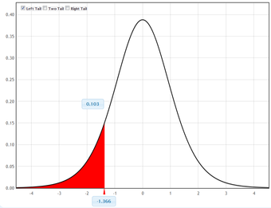{kind=link}
This graph shows the critical region for the test statistic in our example.
8. Determine the $P$ -value:
9. State whether you reject or fail to reject the null hypothesis:
Since the probability is greater than than the critical value of 5%, we will fail to reject the null hypothesis.
10. Conclusion: Interpret your result in the proper context, and relate it to the original question.
Since the probability is greater than 5%, this is not considered a rare event and the large probability tells us not to reject the null hypothesis. It is likely that the average statistics score is 65. The $p$ -value tells us that there is more than 10% chance of obtaining our sample mean of 63 if the null hypothesis is true. This is not a rare event. We conclude that the sample data do not show sufficient evidence that the mean score is less than 65. We do not have strong evidence against the null hypothesis.
12.5.10. Testing a Single Variance
In this section we will evaluate an example of hypothesis testing for a single variance.
Learning Objective
Construct and evaluate a hypothesis test for a single variance.
Key Points
- A test of a single variance assumes that the underlying distribution is normal.
- The null and alternate hypotheses are stated in terms of the population variance (or population standard deviation).
- A test of a single variance may be right-tailed, left-tailed, or two-tailed.
Key Terms
- variance
- a measure of how far a set of numbers is spread out
- null hypothesis
- A hypothesis set up to be refuted in order to support an alternative hypothesis; presumed true until statistical evidence in the form of a hypothesis test indicates otherwise.
A test of a single variance assumes that the underlying distribution is normal. The null and alternate hypotheses are stated in terms of the population variance (or population standard deviation). The test statistic is:
where:
$n$ is the total number of data,
${ s }^{ 2 }$ is the sample variance, and
${ \sigma }^{ 2 }$ is the population variance.
We may think of $s$ as the random variable in this test. The degrees of freedom are $df=n-1$ .
A test of a single variance may be right-tailed, left-tailed, or two-tailed.
The following example shows how to set up the null hypothesis and alternate hypothesis. The null and alternate hypotheses contain statements about the population variance.
Example 1
Math instructors are not only interested in how their students do on exams, on average, but how the exam scores vary. To many instructors, the variance (or standard deviation) may be more important than the average.
Suppose a math instructor believes that the standard deviation for his final exam is 5 points. One of his best students thinks otherwise. The student claims that the standard deviation is more than 5 points. If the student were to conduct a hypothesis test, what would the null and alternate hypotheses be?
Solution
Even though we are given the population standard deviation, we can set the test up using the population variance as follows.
Example 2
With individual lines at its various windows, a post office finds that the standard deviation for normally distributed waiting times for customers on Friday afternoon is 7.2 minutes. The post office experiments with a single main waiting line and finds that for a random sample of 25 customers, the waiting times for customers have a standard deviation of 3.5 minutes.
With a significance level of 5%, test the claim that a single line causes lower variation among waiting times (shorter waiting times) for customers.
Solution
Since the claim is that a single line causes lower variation, this is a test of a single variance. The parameter is the population variance, $\sigma^2$ , or the population standard deviation, $\sigma$ .
Random Variable: The sample standard deviation, $s$ , is the random variable. Let $s$ be the standard deviation for the waiting times.
- ${ H }_{ 0 }={ \sigma }^{ 2 }={ 7.2 }^{ 2 }$
- ${ H }_{ a }={ \sigma }^{ 2 }<{ 7.2 }^{ 2 }$
The word "lower" tells you this is a left-tailed test.
Distribution for the test: ${ x }_{ 24 }^{ 2 }$ , where:
- $n$ is the number of customers sampled
- $df = n-1 = 25-1 = 24$
Calculate the test statistic:
where $n=25$ , $s=3.5$ , and $\sigma = 7.2$ .
Graph:
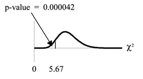{kind=link}
This image shows the graph of the critical region in our example.
Probability statement: $p\text{-value} = P(x^2 < 5.67) = 0.000042$
Compare $\alpha $ and the $p$ -value: $\alpha =0.05; \ p\text{-value} = 0.000042; \ \alpha > p\text{-value}$
Make a decision: Since $\alpha > p\text{-value}$ , reject $H_0$ . This means that we reject $\sigma^2 = 7.22$ . In other words, we do not think the variation in waiting times is 7.2 minutes, but lower.
Conclusion: At a 5% level of significance, from the data, there is sufficient evidence to conclude that a single line causes a lower variation among the waiting times; or, with a single line, the customer waiting times vary less than 7.2 minutes.
12.6. Hypothesis Testing: Two Samples
12.6.1. Using Two Samples
To compare two means or two proportions, one works with two groups.
Learning Objective
Distinguish between independent and matched pairs in terms of hypothesis tests comparing two groups.
Key Points
- The groups are classified either as independent or matched pairs.
- Independent groups mean that the two samples taken are independent, that is, sample values selected from one population are not related in any way to sample values selected from the other population.
- Matched pairs consist of two samples that are dependent.
Key Terms
- independent group
- A statistical group of random variables that has the same probability distribution as the others, and that are all mutually independent.
- matched pair
- A data set of two groups consisting of two samples that are dependent.
Studies often compare two groups. For example, researchers are interested in the effect aspirin has in preventing heart attacks. Over the last few years, newspapers and magazines have reported about various aspirin studies involving two groups. Typically, one group is given aspirin and the other group is given a placebo. Then, the heart attack rate is studied over several years.
There are other situations that deal with the comparison of two groups. For example, studies compare various diet and exercise programs. Politicians compare the proportion of individuals from different income brackets who might vote for them. Students are interested in whether SAT or GRE preparatory courses really help raise their scores.
In the previous section, we explained how to conduct hypothesis tests on single means and single proportions. We will expand upon that in this section. You will compare two means or two proportions to each other. The general procedure is still the same, just expanded.
To compare two means or two proportions, one works with two groups. The groups are classified either as independent or matched pairs. Independent groups mean that the two samples taken are independent, that is, sample values selected from one population are not related in any way to sample values selected from the other population. Matched pairs consist of two samples that are dependent. The parameter tested using matched pairs is the population mean (see ). The parameters tested using independent groups are either population means or population proportions.
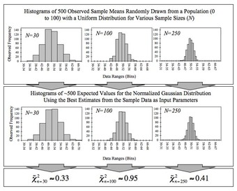{kind=link}
This image shows a series of histograms for a large number of sample means taken from a population. Recall that as more sample means are taken, the closer the mean of these means will be to the population mean. In this section, we explore hypothesis testing of two independent population means (and proportions) and also tests for paired samples of population means.
To conclude, this section deals with the following hypothesis tests:
- Tests of two independent population means
- Tests of two independent population proportions
- Tests of matched or paired samples (necessarily a test of the population mean)
12.6.2. Comparing Two Independent Population Means
To compare independent samples, both populations are normally distributed with the population means and standard deviations unknown.
Learning Objective
Outline the mechanics of a hypothesis test comparing two independent population means.
Key Points
- Very different means can occur by chance if there is great variation among the individual samples.
- In order to account for the variation, we take the difference of the sample means and divide by the standard error in order to standardize the difference.
- Because we do not know the population standard deviations, we estimate them using the two sample standard deviations from our independent samples.
Key Terms
- degrees of freedom (df)
- The number of objects in a sample that are free to vary.
- t-score
- A score utilized in setting up norms for standardized tests; obtained by linearly transforming normalized standard scores.
Independent samples are simple random samples from two distinct populations. To compare these random samples, both populations are normally distributed with the population means and standard deviations unknown unless the sample sizes are greater than 30. In that case, the populations need not be normally distributed.
The comparison of two population means is very common. The difference between the two samples depends on both the means and the standard deviations. Very different means can occur by chance if there is great variation among the individual samples. In order to account for the variation, we take the difference of the sample means,
and divide by the standard error (shown below) in order to standardize the difference. The result is a $t$-score test statistic (also shown below).
Because we do not know the population standard deviations, we estimate them using the two sample standard deviations from our independent samples. For the hypothesis test, we calculate the estimated standard deviation, or standard error, of the difference in sample means,
$\bar { { X }_{ 1 } } -\bar { { X }_{ 2 } }$ .
The standard error is:
$\displaystyle \sqrt { \frac { { S }_{ 1 }^{ 2 } }{ { n }_{ 1 } } +\frac { { S }_{ 2 }^{ 2 } }{ { n }_{ 2 } } }$ .
The test statistic ($t$ -score) is calculated as follows:
$\dfrac { (\bar { { X }_{ 1 } } -\bar { { X }_{ 2 } } )-({ \mu }_{ 1 }-{ \mu }_{ 2 }) }{ \sqrt { \dfrac { { S }_{ 1 }^{ 2 } }{ { n }_{ 1 } } +\dfrac { { S }_{ 2 }^{ 2 } }{ { n }_{ 2 } } } }$ .
The degrees of freedom ($df$ ) is a somewhat complicated calculation. The $df$ s are not always a whole number. The test statistic calculated above is approximated by the student's-$t$ distribution with $df$ s as follows:
Note that it is not necessary to compute this by hand. A calculator or computer easily computes it.
Example
The average amount of time boys and girls ages 7 through 11 spend playing sports each day is believed to be the same. An experiment is done, data is collected, resulting in the table below. Both populations have a normal distribution.
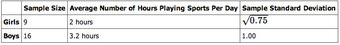{kind=link}
This table lays out the parameters for our example.
Is there a difference in the mean amount of time boys and girls ages 7 through 11 play sports each day? Test at the 5% level of significance.
Solution
The population standard deviations are not known. Let $g$ be the subscript for girls and $b$ be the subscript for boys. Then, $\mu_g$ is the population mean for girls and $\mu_b$ is the population mean for boys. This is a test of two independent groups, two population means.
The random variable: $\bar { { X }_{ g } } -\bar { { X }_{ b } }$ is the difference in the sample mean amount of time girls and boys play sports each day.
The words "the same" tell you $H_0$ has an "=". Since there are no other words to indicate $H_a$ , then assume "is different." This is a two-tailed test.
Distribution for the test: Use $t_{df}$ where $df$ is calculated using the $df$ formula for independent groups, two population means. Using a calculator, $df$ is approximately 18.8462.
Calculate the $p$ -value using a student's-$t$ distribution: $p\text{-value} = 0.0054$
Graph:
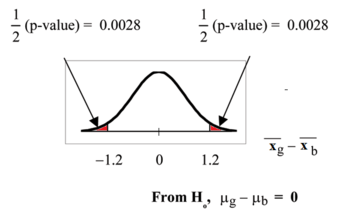{kind=link}
This image shows the graph for the $p$ -values in our example.
so, $\bar { { X }_{ g } } -\bar { { X }_{ b } }=2-3.1=-1.2$
Half the $p$ -value is below $-1.2$ and half is above 1.2.
Make a decision: Since $\alpha > p\text{-value}$ , reject $H_0$ . This means you reject $\mu_g = \mu_b$ . The means are different.
Conclusion: At the 5% level of significance, the sample data show there is sufficient evidence to conclude that the mean number of hours that girls and boys aged 7 through 11 play sports per day is different (the mean number of hours boys aged 7 through 11 play sports per day is greater than the mean number of hours played by girls OR the mean number of hours girls aged 7 through 11 play sports per day is greater than the mean number of hours played by boys).
12.6.3. Comparing Two Independent Population Proportions
If two estimated proportions are different, it may be due to a difference in the populations or it may be due to chance.
Learning Objective
Demonstrate how a hypothesis test can help determine if a difference in estimated proportions reflects a difference in population proportions.
Key Points
- Comparing two proportions (e.g., comparing two means) is common.
- A hypothesis test can help determine if a difference in the estimated proportions reflects a difference in the population proportions.
- The difference of two proportions follows an approximate normal distribution.
- Generally, the null hypothesis states that the two proportions are the same.
Key Terms
- independent sample
- Two samples are independent as they are drawn from two different populations, and the samples have no effect on each other.
- random sample
- a sample randomly taken from an investigated population
When comparing two population proportions, we start with two assumptions:
- The two independent samples are simple random samples that are independent.
- The number of successes is at least five and the number of failures is at least five for each of the samples.
Comparing two proportions (e.g., comparing two means) is common. If two estimated proportions are different, it may be due to a difference in the populations or it may be due to chance. A hypothesis test can help determine if a difference in the estimated proportions:
reflects a difference in the population proportions.
The difference of two proportions follows an approximate normal distribution. Generally, the null hypothesis states that the two proportions are the same. That is, $H_0: p_A = p_B$ . To conduct the test, we use a pooled proportion, $p_c$ .
The pooled proportion is calculated as follows:
The distribution for the differences is:
$\displaystyle { P }_{ A }^{ ' }-{ P }_{ B }^{ ' }\sim N\left[ 0,\sqrt { { p }_{ c }\cdot (1-{ p }_{ c })\cdot \left( \frac { 1 }{ { n }_{ A } } +\frac { 1 }{ { n }_{ B } } \right) } \right]$ .
The test statistic ($z$ -score) is:
$\displaystyle z=\frac { { (p }_{ A }^{ ' }-{ p }_{ B }^{ ' })-({ p }_{ A }-{ p }_{ B }) }{ \sqrt { { p }_{ c }\cdot (1-{ p }_{ c })\cdot \left( \frac { 1 }{ { n }_{ A } } +\frac { 1 }{ { n }_{ B } } \right) } }$ .
Example
Two types of medication for hives are being tested to determine if there is a difference in the proportions of adult patient reactions. 20 out of a random sample of 200 adults given medication $A$ still had hives 30 minutes after taking the medication. 12 out of another random sample of 200 adults given medication $B$ still had hives 30 minutes after taking the medication. Test at a 1% level of significance.
Let $A$ and $B$ be the subscripts for medication $A$ and medication $B$ . Then $p_A$ and $p_B$ are the desired population proportions.
Random Variable:
is the difference in the proportions of adult patients who did not react after 30 minutes to medication $A$ and medication $B$ .
The words "is a difference" tell you the test is two-tailed.
Distribution for the test: Since this is a test of two binomial population proportions, the distribution is normal:
$\displaystyle { p }_{ c }=\frac { { x }_{ A }+{ x }_{ B } }{ { n }_{ A }+{ n }_{ B } } =\frac { 20+12 }{ 200+200 } =0.08 \\ 1-{ p }_{ c }=0.92$ .
Therefore:
${ P }_{ A }^{ ' }-{ P }_{ B }^{ ' }$ follows an approximate normal distribution.
Calculate the $p$ -value using the normal distribution: $p\text{-value} = 0.1404$ .
Estimated proportion for group $A$ : $\displaystyle { p }_{ A }^{ ' }=\frac { { x }_{ A } }{ n_{ A } } =\frac { 20 }{ 200 } =0.1$
Estimated proportion for group $B$ : $\displaystyle { p }_{ B }^{ ' }=\frac { { x }_{ B } }{ n_{ B } } =\frac { 12 }{ 200 } =0.06$
Graph:
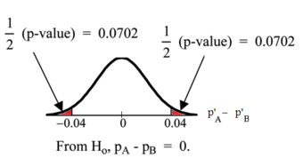{kind=link}
This image shows the graph of the $p$ -values in our example.
$P'_A - P'_B = 0.1 -0.06 = 0.04$ .
Half the $p$ -value is below $-0.04$ and half is above 0.04.
Compare $\alpha$ and the $p$ -value: $\alpha = 0.01$ and the $p\text{-value}=0.1404$ . $\alpha = p\text{-value}$ .
Make a decision: Since $\alpha = p\text{-value}$ , do not reject $H_0$ .
Conclusion: At a 1% level of significance, from the sample data, there is not sufficient evidence to conclude that there is a difference in the proportions of adult patients who did not react after 30 minutes to medication $A$ and medication $B$ .
12.6.4. Comparing Matched or Paired Samples
In a hypothesis test for matched or paired samples, subjects are matched in pairs and differences are calculated.
Learning Objective
Construct a hypothesis test in which the data set is the set of differences between matched or paired samples.
Key Points
- The difference between the paired samples is the target parameter.
- The population mean for the differences is tested using a Student-$t$ test for a single population mean with $n-1$ degrees of freedom, where $n$ is the number of differences.
- When comparing matched or paired samples: simple random sampling is used and sample sizes are often small.
- The matched pairs have differences arising either from a population that is normal, or because the number of differences is sufficiently large so the distribution of the sample mean of differences is approximately normal.
Key Term
- df
- Notation for degrees of freedom.
When performing a hypothesis test comparing matched or paired samples, the following points hold true:
- Simple random sampling is used.
- Sample sizes are often small.
- Two measurements (samples) are drawn from the same pair of individuals or objects.
- Differences are calculated from the matched or paired samples.
- The differences form the sample that is used for the hypothesis test.
- The matched pairs have differences arising either from a population that is normal, or because the number of differences is sufficiently large so the distribution of the sample mean of differences is approximately normal.
In a hypothesis test for matched or paired samples, subjects are matched in pairs and differences are calculated. The differences are the data. The population mean for the differences, $\mu_d$ , is then tested using a Student-$t$ test for a single population mean with $n-1$ degrees of freedom, where $n$ is the number of differences.
The test statistic ($t$ -score) is:
Example
A study was conducted to investigate the effectiveness of hypnotism in reducing pain. Results for randomly selected subjects are shown in the table below. The "before" value is matched to an "after" value, and the differences are calculated. The differences have a normal distribution .
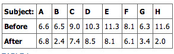{kind=link}
This table shows the before and after values of the data in our sample.
Are the sensory measurements, on average, lower after hypnotism? Test at a 5% significance level.
Solution
shows that the corresponding "before" and "after" values form matched pairs. (Calculate "after" minus "before").
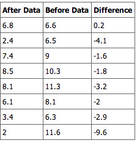{kind=link}
This table shows the before and after values and their calculated differences.
The data for the test are the differences:
{0.2, -4.1, -1.6, -1.8, -3.2, -2, -2.9, -9.6}
The sample mean and sample standard deviation of the differences are: \bar { { x }_{ d } } =-3.13 and
Verify these values. Let μd be the population mean for the differences. We use the subscript d to denote "differences".
Random Variable: $\bar { { x }_{ d } }$ (the mean difference of the sensory measurements):
There is no improvement. ($\mu_d$ is the population mean of the differences.)
There is improvement. The score should be lower after hypnotism, so the difference ought to be negative to indicate improvement.
Distribution for the test: The distribution is a student-$t$ with $df = n-1 = 8-1 = 7$ . Use $t_7$ . (Notice that the test is for a single population mean. )
Calculate the $p$ -value using the Student-$t$ distribution: $p\text{-value} = 0.0095$
Graph:
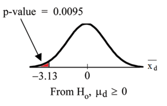{kind=link}
This image shows the graph of the $p$ -value obtained in our example.
$\bar { { X }_{ d } }$ is the random variable for the differences. The sample mean and sample standard deviation of the differences are:
Compare $\alpha$ and the $p$ -value: $\alpha = 0.05$ and $p\text{-value} = 0.0095$ . $\alpha > p\text{-value}$ .
Make a decision: Since $\alpha > p\text{-value}$ , reject $H_0$ . This means that $\mu_d < 0 $ , and there is improvement.
Conclusion: At a 5% level of significance, from the sample data, there is sufficient evidence to conclude that the sensory measurements, on average, are lower after hypnotism. Hypnotism appears to be effective in reducing pain.
12.6.5. Comparing Two Population Variances
In order to compare two variances, we must use the $F$ distribution.
Learning Objective
Outline the
Key Points
- In order to perform a $F$ test of two variances, it is important that the following are true: (1) the populations from which the two samples are drawn are normally distributed, and (2) the two populations are independent of each other.
- When we are interested in comparing the two sample variances, we use the $F$ ratio: $F=\dfrac { \left[ \dfrac { { s }_{ 1 }^{ 2 } }{ { \sigma }_{ 1 }^{ 2 } } \right] }{ \left[ \dfrac { { s }_{ 2 }^{ 2 } }{ { \sigma }_{ 2 }^{ 2 } } \right] }$ .
- If the null hypothesis is $\sigma_1^2 = \sigma_2^2$ , then the $F$ ratio becomes: $F=\dfrac { \left[ \dfrac { { s }_{ 1 }^{ 2 } }{ { \sigma }_{ 1 }^{ 2 } } \right] }{ \left[ \dfrac { { s }_{ 2 }^{ 2 } }{ { \sigma }_{ 2 }^{ 2 } } \right] } =\dfrac { { s }_{ 1 }^{ 2 } }{ { s }_{ 2 }^{ 2 } }$ .
- If the two populations have equal variances the $F$ ratio is close to 1.
- If the two population variances are far apart the $F$ ratio becomes a large number.
- Therefore, if $F$ is close to 1, the evidence favors the null hypothesis (the two population variances are equal); but if $F$ is much larger than 1, then the evidence is against the null hypothesis.
Key Terms
- F distribution
- A probability distribution of the ratio of two variables, each with a chi-square distribution; used in analysis of variance, especially in the significance testing of a correlation coefficient (
$R$ squared). - null hypothesis
- A hypothesis set up to be refuted in order to support an alternative hypothesis; presumed true until statistical evidence in the form of a hypothesis test indicates otherwise.
It is often desirable to compare two variances, rather than two means or two proportions. For instance, college administrators would like two college professors grading exams to have the same variation in their grading. In order for a lid to fit a container, the variation in the lid and the container should be the same. A supermarket might be interested in the variability of check-out times for two checkers. In order to compare two variances, we must use the $F$ distribution.
In order to perform a $F$ test of two variances, it is important that the following are true:
- The populations from which the two samples are drawn are normally distributed.
- The two populations are independent of each other.
Suppose we sample randomly from two independent normal populations. Let $\sigma_1^2$ and $\sigma_2^2$ be the population variances and $s_1^2$ and $s_2^2$ be the sample variances. Let the sample sizes be $n_1$ and $n_2$ . Since we are interested in comparing the two sample variances, we use the $F$ ratio:
$F$ has the distribution $F \sim F(n_1 - 1, n_2 - 1)$ where $n_1 - 1$ are the degrees of freedom for the numerator and $n_2 - 1$ are the degrees of freedom for the denominator.
If the null hypothesis is $\sigma_1^2 = \sigma_2^2$ , then the $F$ ratio becomes:
$F=\dfrac { \left[ \dfrac { { s }_{ 1 }^{ 2 } }{ { \sigma }_{ 1 }^{ 2 } } \right] }{ \left[ \dfrac { { s }_{ 2 }^{ 2 } }{ { \sigma }_{ 2 }^{ 2 } } \right] } =\dfrac { { s }_{ 1 }^{ 2 } }{ { s }_{ 2 }^{ 2 } }$
Note that the $F$ ratio could also be $\frac { { s }_{ 2 }^{ 2 } }{ { s }_{ 1 }^{ 2 } }$ . It depends on $H_a$ and on which sample variance is larger.
If the two populations have equal variances, then $s_1^2$ and $s_2^2$ are close in value and $F=\frac { { s }_{ 1 }^{ 2 } }{ { s }_{ 2 }^{ 2 } }$ is close to 1. But if the two population variances are very different, $s_1^2$ and $s_2^2$ tend to be very different, too. Choosing $s_1^2$ as the larger sample variance causes the ratio $\frac { { s }_{ 1 }^{ 2 } }{ { s }_{ 2 }^{ 2 } }$ to be greater than 1. If $s_1^2$ and $s_2^2$ are far apart, then $F=\frac { { s }_{ 1 }^{ 2 } }{ { s }_{ 2 }^{ 2 } }$ is a large number.
Therefore, if $F$ is close to 1, the evidence favors the null hypothesis (the two population variances are equal). But if $F$ is much larger than 1, then the evidence is against the null hypothesis.
A test of two variances may be left, right, or two-tailed.
Example
Two college instructors are interested in whether or not there is any variation in the way they grade math exams. They each grade the same set of 30 exams. The first instructor's grades have a variance of 52.3. The second instructor's grades have a variance of 89.9.
Test the claim that the first instructor's variance is smaller. (In most colleges, it is desirable for the variances of exam grades to be nearly the same among instructors.) The level of significance is 10%.
Solution
Let 1 and 2 be the subscripts that indicate the first and second instructor, respectively: $n_1 = n_2 = 30$ .
$H_0: \sigma_1^2 = \sigma_2^2$ and $H_a: \sigma_1^2 < \sigma_2^2$
Calculate the test statistic: By the null hypothesis ($\sigma_1^2 = \sigma_2^2$ ), the F statistic is:
Distribution for the test: $F_{29, 29}$ where $n_1-1 = 29$ and $n_2 -1 = 29$ .
Graph: This test is left-tailed:
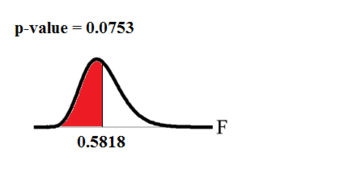{kind=link}
This image shows the graph of the $p$ -value we calculate in our example.
Probability statement: $p\text{-value} = P(F<0.5818) = 0.0753$ .
Compare $\alpha$ and the $p$ -value: $\alpha = 0.10 > p\text{-value}$ .
Make a decision: Since $\alpha > p\text{-value}$ , reject $H_0$ .
Conclusion: With a 10% level of significance, from the data, there is sufficient evidence to conclude that the variance in grades for the first instructor is smaller.
12.6.6. Determining Sample Size
A common problem is calculating the sample size required to yield a certain power for a test, given a predetermined type I error rate $\alpha$ .
Learning Objective
Calculate the appropriate sample size required to yield a certain power for a hypothesis test by using predetermined tables, Mead's resource equation or the cumulative distribution function.
Key Points
- In a hypothesis test, sample size can be estimated by pre-determined tables for certain values, by Mead's resource equation, or, more generally, by the cumulative distribution function.
- Using desired statistical power and Cohen's $D$ in a table can yield an appropriate sample size for a hypothesis test.
- Mead's equation may not be as accurate as using other methods in estimating sample size, but gives a hint of what is the appropriate sample size where parameters such as expected standard deviations or expected differences in values between groups are unknown or very hard to estimate.
- In a hypothesis test, sample size can be estimated by pre-determined tables for certain values, by Mead's resource equation, or, more generally, by the cumulative distribution function.
Key Terms
- Mead's resource equation
$E=N-B-T$ : an equation that gives a hint of what the appropriate sample size is, where parameters such as expected standard deviations or expected differences in values between groups are unknown or very hard to estimate.- Cohen's D
- A measure of effect size indicating the amount of different between two groups on a construct of interest in standard deviation units.
Required Sample Sizes for Hypothesis Tests
A common problem faced by statisticians is calculating the sample size required to yield a certain power for a test, given a predetermined Type I error rate $\alpha$ . As follows, this can be estimated by pre-determined tables for certain values, by Mead's resource equation, or, more generally, by the cumulative distribution function.
By Tables
The table shown in can be used in a two-sample $t$ -test to estimate the sample sizes of an experimental group and a control group that are of equal size—that is, the total number of individuals in the trial is twice that of the number given, and the desired significance level is 0.05.
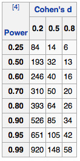{kind=link}
This table can be used in a two-sample $t$ -test to estimate the sample sizes of an experimental group and a control group that are of equal size.
The parameters used are:
- The desired statistical power of the trial, shown in column to the left.
- Cohen's $D$ (effect size), which is the expected difference between the means of the target values between the experimental group and the control group divided by the expected standard deviation.
Mead's Resource Equation
Mead's resource equation is often used for estimating sample sizes of laboratory animals, as well as in many other laboratory experiments. It may not be as accurate as using other methods in estimating sample size, but gives a hint of what is the appropriate sample size where parameters such as expected standard deviations or expected differences in values between groups are unknown or very hard to estimate.
All the parameters in the equation are in fact the degrees of freedom of the number of their concepts, and hence, their numbers are subtracted by 1 before insertion into the equation. The equation is:
where:
- $N$ is the total number of individuals or units in the study (minus 1)
- $B$ is the blocking component, representing environmental effects allowed for in the design (minus 1)
- $T$ is the treatment component, corresponding to the number of treatment groups (including control group) being used, or the number of questions being asked (minus 1)
- $E$ is the degrees of freedom of the error component, and should be somewhere between 10 and 20.
By Cumulative Distribution Function
Let $X_i, i = 1, 2, \dots, n$ , be independent observations taken from a normal distribution with unknown mean $\mu$ and known variance $\sigma^2$ . Let us consider two hypotheses, a null hypothesis:
and an alternative hypothesis:
for some "smallest significant difference" $\mu^* > 0$ . This is the smallest value for which we care about observing a difference. Now, if we wish to:
- reject $H_0$ with a probability of at least $1-\beta$ when $H_a$ is true (i.e., a power of $1-\beta$ ), and
- reject $H_0$ with probability $\alpha$ when $H_0$ is true,
then we need the following:
If $z_{\alpha}$ is the upper $\alpha$ percentage point of the standard normal distribution, then:
$\displaystyle Pr\left( \frac { \bar { x } >{ z }_{ a }\sigma }{ \sqrt { n } } |{ H }_{ 0 } \ \text{is true} \right) =\alpha$ ,
and so "reject $H_0$ if our sample average is more than $\frac { { z }_{ a }\sigma }{ \sqrt { n } }$ " is a decision rule that satisfies number 2 above. Note that this is a one-tailed test.
12.7. Hypothesis Testing: Correlations
12.7.1. Hypothesis Tests with the Pearson Correlation
We test the correlation coefficient to determine whether the linear relationship in the sample data effectively models the relationship in the population.
Learning Objective
Use a hypothesis test in order to determine the significance of Pearson's correlation coefficient.
Key Points
- Pearson's correlation coefficient, $r$ , tells us about the strength of the linear relationship between $x$ and $y$ points on a regression plot.
- The hypothesis test lets us decide whether the value of the population correlation coefficient $\rho$ is "close to 0" or "significantly different from 0" based on the sample correlation coefficient $r$ and the sample size $n$ .
- If the test concludes that the correlation coefficient is significantly different from 0, we say that the correlation coefficient is "significant".
- If the test concludes that the correlation coefficient is not significantly different from 0 (it is close to 0), we say that correlation coefficient is "not significant".
Key Term
- Pearson's correlation coefficient
- a measure of the linear correlation (dependence) between two variables
$X$ and$Y$ , giving a value between$+1$ and$-1$ inclusive, where 1 is total positive correlation, 0 is no correlation, and$-1$ is negative correlation
Testing the Significance of the Correlation Coefficient
Pearson's correlation coefficient, $r$ , tells us about the strength of the linear relationship between $x$ and $y$ points on a regression plot. However, the reliability of the linear model also depends on how many observed data points are in the sample. We need to look at both the value of the correlation coefficient $r$ and the sample size $n$ , together. We perform a hypothesis test of the "significance of the correlation coefficient" to decide whether the linear relationship in the sample data is strong enough to use to model the relationship in the population.
The hypothesis test lets us decide whether the value of the population correlation coefficient $\rho$ is "close to 0" or "significantly different from 0". We decide this based on the sample correlation coefficient $r$ and the sample size $n$ .
If the test concludes that the correlation coefficient is significantly different from 0, we say that the correlation coefficient is "significant."
Conclusion: "There is sufficient evidence to conclude that there is a significant linear relationship between $x$ and $y$ because the correlation coefficient is significantly different from 0."
What the conclusion means: There is a significant linear relationship between $x$ and $y$ . We can use the regression line to model the linear relationship between $x$ and $y$ in the population.
If the test concludes that the correlation coefficient is not significantly different from 0 (it is close to 0), we say that correlation coefficient is "not significant. "
Conclusion: "There is insufficient evidence to conclude that there is a significant linear relationship between $x$ and $y$ because the correlation coefficient is not significantly different from 0. "
What the conclusion means: There is not a significant linear relationship between $x$ and $y$ . Therefore we can NOT use the regression line to model a linear relationship between $x$ and $y$ in the population.
Performing the Hypothesis Test
Our null hypothesis will be that the correlation coefficient IS NOT significantly different from 0. There IS NOT a significant linear relationship (correlation) between $x$ and $y$ in the population. Our alternative hypothesis will be that the population correlation coefficient IS significantly different from 0. There IS a significant linear relationship (correlation) between $x$ and $y$ in the population.
Using a Table of Critical Values to Make a Decision
The 95% critical values of the sample correlation coefficient table shown in gives us a good idea of whether the computed value of $r$ is significant or not. Compare $r$ to the appropriate critical value in the table. If $r$ is not between the positive and negative critical values, then the correlation coefficient is significant. If $r$ is significant, then we can use the line for prediction.
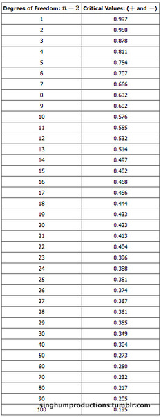{kind=link}
This table gives us a good idea of whether the computed value of r is significant or not.
As an example, suppose you computed $r=0.801$ using $n=10$ data points. $df = n-2 =10-2 = 8$ . The critical values associated with $df=8$ are $\pm 0.632$ . If $r$ is less than the negative critical value or $r$ is greater than the positive critical value, then $r$ is significant. Since $r=0.801$ and $0.801 > 0.632$ , $r$ is significant and the line may be used for prediction.
Assumptions in Testing the Significance of the Correlation Coefficient
Testing the significance of the correlation coefficient requires that certain assumptions about the data are satisfied. The premise of this test is that the data are a sample of observed points taken from a larger population. We have not examined the entire population because it is not possible or feasible to do so. We are examining the sample to draw a conclusion about whether the linear relationship that we see between $x$ and $y$ in the sample data provides strong enough evidence so that we can conclude that there is a linear relationship between $x$ and $y$ in the population.
The assumptions underlying the test of significance are:
- There is a linear relationship in the population that models the average value of $y$ for varying values of $x$ . In other words, the expected value of $y$ for each particular value lies on a straight line in the population. (We do not know the equation for the line for the population. Our regression line from the sample is our best estimate of this line in the population. )
- The $y$ values for any particular $x$ value are normally distributed about the line. This implies that there are more $y$ values scattered closer to the line than are scattered farther away. Assumption one above implies that these normal distributions are centered on the line: the means of these normal distributions of $y$ values lie on the line.
- The standard deviations of the population $y$ values about the line are equal for each value of $x$ . In other words, each of these normal distributions of $y$ values has the same shape and spread about the line.
- The residual errors are mutually independent (no pattern).
12.8. One-Way ANOVA
12.8.1. The F-Test
An F-test is any statistical test in which the test statistic has an F-distribution under the null hypothesis.
Learning Objective
Summarize the F-statistic, the F-test and the F-distribution.
Key Points
- The F-test is most often used when comparing statistical models that have been fitted to a data set, in order to identify the model that best fits the population from which the data were sampled.
- Perhaps the most common F-test is that which tests the hypothesis that the means and standard deviations of several populations are equal. (Note that all populations involved must be assumed to be normally distributed.)
- The F-test is sensitive to non-normality.
- The F-distribution is skewed to the right, but as the degrees of freedom for the numerator and for the denominator get larger, the curve approximates the normal.
Key Terms
- ANOVA
- Analysis of variance—a collection of statistical models used to analyze the differences between group means and their associated procedures (such as "variation" among and between groups).
- F-Test
- A statistical test using the F-distribution, most often used when comparing statistical models that have been fitted to a data set, in order to identify the model that best fits the population from which the data were sampled.
- Type I error
- Rejecting the null hypothesis when the null hypothesis is true.
An F-test is any statistical test in which the test statistic has an F-distribution under the null hypothesis. It is most often used when comparing statistical models that have been fitted to a data set, in order to identify the model that best fits the population from which the data were sampled. Exact F-tests mainly arise when the models have been fitted to the data using least squares. The name was coined by George W. Snedecor, in honour of Sir Ronald A. Fisher. Fisher initially developed the statistic as the variance ratio in the 1920s.
The F-test is sensitive to non-normality. In the analysis of variance (ANOVA), alternative tests include Levene's test, Bartlett's test, and the Brown–Forsythe test. However, when any of these tests are conducted to test the underlying assumption of homoscedasticity (i.e., homogeneity of variance), as a preliminary step to testing for mean effects, there is an increase in the experiment-wise type I error rate.
Examples of F-tests include:
- The hypothesis that the means and standard deviations of several populations are equal. (Note that all populations involved must be assumed to be normally distributed.) This is perhaps the best-known F-test, and plays an important role in the analysis of variance (ANOVA).
- The hypothesis that a proposed regression model fits the data well (lack-of-fit sum of squares).
- The hypothesis that a data set in a regression analysis follows the simpler of two proposed linear models that are nested within each other.
- Scheffé's method for multiple comparisons adjustment in linear models.
The F-Distribution
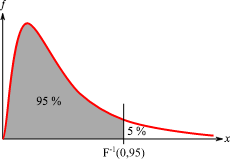{kind=link}
The F-distribution is skewed to the right and begins at the x-axis, meaning that F-values are always positive.
The F-distribution exhibits the following properties, as illustrated in the above graph:
- The curve is not symmetrical but is skewed to the right.
- There is a different curve for each set of degrees of freedom.
- The F-statistic is greater than or equal to zero.
- As the degrees of freedom for the numerator and for the denominator get larger, the curve approximates the normal.
The F-statistic also has a common table of values, as do z-scores and t-scores.
12.8.2. The One-Way F-Test
The $F$ -test as a one-way analysis of variance assesses whether the expected values of a quantitative variable within groups differ from each other.
Learning Objective
Explain the purpose of the one-way ANOVA
Key Points
- The advantage of the ANOVA $F$ -test is that we do not need to pre-specify which treatments are to be compared, and we do not need to adjust for making multiple comparisons.
- The disadvantage of the ANOVA $F$ -test is that if we reject the null hypothesis, we do not know which treatments can be said to be significantly different from the others.
- If the $F$ -test is performed at level $\alpha$ we cannot state that the treatment pair with the greatest mean difference is significantly different at level $\alpha$ .
- The $F$ -statistic will be large if the between-group variability is large relative to the within-group variability, which is unlikely to happen if the population means of the groups all have the same value.
Key Terms
- ANOVA
- Analysis of variance—a collection of statistical models used to analyze the differences between group means and their associated procedures (such as "variation" among and between groups).
- F-Test
- a statistical test using the
$F$ distribution, most often used when comparing statistical models that have been fitted to a data set, in order to identify the model that best fits the population from which the data were sampled - omnibus
- containing multiple items
The $F$ test as a one-way analysis of variance is used to assess whether the expected values of a quantitative variable within several pre-defined groups differ from each other. For example, suppose that a medical trial compares four treatments. The ANOVA $F$ -test can be used to assess whether any of the treatments is on average superior, or inferior, to the others versus the null hypothesis that all four treatments yield the same mean response. This is an example of an "omnibus" test, meaning that a single test is performed to detect any of several possible differences.
Alternatively, we could carry out pairwise tests among the treatments (for instance, in the medical trial example with four treatments we could carry out six tests among pairs of treatments). The advantage of the ANOVA $F$ -test is that we do not need to pre-specify which treatments are to be compared, and we do not need to adjust for making multiple comparisons. The disadvantage of the ANOVA $F$ -test is that if we reject the null hypothesis, we do not know which treatments can be said to be significantly different from the others. If the $F$ -test is performed at level $\alpha$ we cannot state that the treatment pair with the greatest mean difference is significantly different at level $\alpha$ .
The formula for the one-way ANOVA $F$ -test statistic is:
or
The "explained variance," or "between-group variability" is:
where ${ \bar { Y } }_{ i }$ denotes the sample mean in the $i$th group, $n_i$ is the number of observations in the $i$th group, $\bar { Y }$ denotes the overall mean of the data, and $K$ denotes the number of groups.
The "unexplained variance", or "within-group variability" is:
where $\bar{Y_{ij}}$ is the $j$th observation in the $i$th out of $K$ groups and $N$ is the overall sample size. This $F$ -statistic follows the $F$ -distribution with $K-1$ , $N-K$ degrees of freedom under the null hypothesis. The statistic will be large if the between-group variability is large relative to the within-group variability, which is unlikely to happen if the population means of the groups all have the same value.
Note that when there are only two groups for the one-way ANOVA $F$ -test, $F=t^2$ where $t$ is the Student's $t$ -statistic.
Example
Four sororities took a random sample of sisters regarding their grade means for the past term. The data were distributed as follows:
- Sorority 1: 2.17, 1.85, 2.83, 1.69, 3.33
- Sorority 2: 2.63,1.77, 3.25, 1.86, 2.21
- Sorority 3: 2.63, 3.78, 4.00, 2.55, 2.45
- Sorority 4: 3.79, 3.45, 3.08, 2.26, 3.18
Using a significance level of 1%, is there a difference in mean grades among the sororities?
Solution
Let $\mu_1$ , $\mu_2$ , $\mu_3$ , $\mu_4$ be the population means of the sororities. Remember that the null hypothesis claims that the sorority groups are from the same normal distribution. The alternate hypothesis says that at least two of the sorority groups come from populations with different normal distributions. Notice that the four sample sizes are each size 5. Also, note that this is an example of a balanced design, since each factor (i.e., sorority) has the same number of observations.
$H_a: $ Not all of the means $\mu_1$ , $\mu_2$ , $\mu_3$ , $\mu_4$ are equal
Distribution for the test: $F_{3, 16}$
where $k=4$ groups and $n=20$ samples in total
Calculate the test statistic: $F=2.23$
Graph:
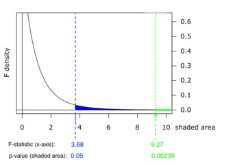{kind=link}
This chart shows example p-values for two F-statistics: p = 0.05 for F = 3.68, and p = 0.00239 for F = 9.27. These numbers are evidence of the skewness of the F-curve to the right; a much higher F-value corresponds to an only slightly smaller p-value.
Probability statement: $p\text{-value} = P(F>2.23) = 0.1241$
Compare $\alpha$ and the $p$ -value: $\alpha = 0.01$ , $p\text{-value} = 0.1241$
Make a decision: Since $\alpha < p\text{-value}$ , you cannot reject $H_0$ .
Conclusion: There is not sufficient evidence to conclude that there is a difference among the mean grades for the sororities.
12.8.3. Variance Estimates
The $F$ -test can be used to test the hypothesis that the variances of two populations are equal.
Learning Objective
Discuss the
Key Points
- This $F$ -test needs to be used with caution, as it can be especially sensitive to the assumption that the variables have a normal distribution.
- This test is of importance in mathematical statistics, since it provides a basic exemplar case in which the $F$ -distribution can be derived.
- The null hypothesis is rejected if $F$ is either too large or too small.
- $F$ -tests are used for other statistical tests of hypotheses, such as testing for differences in means in three or more groups, or in factorial layouts.
Key Terms
- F-Test
- A statistical test using the
$F$ distribution, most often used when comparing statistical models that have been fitted to a data set, in order to identify the model that best fits the population from which the data were sampled. - variance
- a measure of how far a set of numbers is spread out
$F$ -Test of Equality of Variances
An $F$ -test for the null hypothesis that two normal populations have the same variance is sometimes used; although, it needs to be used with caution as it can be sensitive to the assumption that the variables have this distribution.
Notionally, any $F$ -test can be regarded as a comparison of two variances, but the specific case being discussed here is that of two populations, where the test statistic used is the ratio of two sample variances. This particular situation is of importance in mathematical statistics since it provides a basic exemplar case in which the $F$ distribution can be derived.
The Test
Let $X_1, \dots, X_n$ and $Y_1, \dots, Y_m$ be independent and identically distributed samples from two populations which each have a normal distribution. The expected values for the two populations can be different, and the hypothesis to be tested is that the variances are equal. The test statistic is:
It has an $F$ -distribution with $n-1$ and $m-1$ degrees of freedom if the null hypothesis of equality of variances is true. The null hypothesis is rejected if $F$ is either too large or too small. The immediate assumption of the problem outlined above is that it is a situation in which there are more than two groups or populations, and the hypothesis is that all of the variances are equal.
Properties of the $F$ Test
This $F$ -test is known to be extremely sensitive to non-normality. Therefore, they must be used with care, and they must be subject to associated diagnostic checking.
$F$ -tests are used for other statistical tests of hypotheses, such as testing for differences in means in three or more groups, or in factorial layouts. These $F$ -tests are generally not robust when there are violations of the assumption that each population follows the normal distribution, particularly for small alpha levels and unbalanced layouts. However, for large alpha levels (e.g., at least 0.05) and balanced layouts, the $F$ -test is relatively robust. Although, if the normality assumption does not hold, it suffers from a loss in comparative statistical power as compared with non-parametric counterparts.
12.8.4. Mean Squares and the F-Ratio
Most $F$ -tests arise by considering a decomposition of the variability in a collection of data in terms of sums of squares.
Learning Objective
Demonstrate how sums of squares and mean squares produce the
Key Points
- The test statistic in an $F$ -test is the ratio of two scaled sums of squares reflecting different sources of variability.
- These sums of squares are constructed so that the statistic tends to be greater when the null hypothesis is not true.
- To calculate the $F$ -ratio, two estimates of the variance are made: variance between samples and variance within samples.
- The one-way ANOVA test depends on the fact that the mean squares between samples can be influenced by population differences among means of the several groups.
Key Terms
- null hypothesis
- A hypothesis set up to be refuted in order to support an alternative hypothesis; presumed true until statistical evidence in the form of a hypothesis test indicates otherwise.
- pooled variance
- A method for estimating variance given several different samples taken in different circumstances where the mean may vary between samples but the true variance is assumed to remain the same.
Most $F$ -tests arise by considering a decomposition of the variability in a collection of data in terms of sums of squares. The test statistic in an $F$ -test is the ratio of two scaled sums of squares reflecting different sources of variability. These sums of squares are constructed so that the statistic tends to be greater when the null hypothesis is not true. In order for the statistic to follow the $F$ -distribution under the null hypothesis, the sums of squares should be statistically independent, and each should follow a scaled chi-squared distribution. The latter condition is guaranteed if the data values are independent and normally distributed with a common variance .
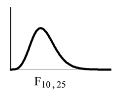{kind=link}
The $F$ ratio follows the $F$ -distribution, which is right skewed.
There are two sets of degrees of freedom for the $F$ -ratio: one for the numerator and one for the denominator. For example, if $F$ follows an $F$ -distribution and the degrees of freedom for the numerator are 4 and the degrees of freedom for the denominator are 10, then $F \sim F_{4, 10}$ .
To calculate the $F$ -ratio, two estimates of the variance are made:
- Variance between samples: An estimate of $\sigma^2$ that is the variance of the sample means multiplied by $n$ (when there is equal $n$ ). If the samples are different sizes, the variance between samples is weighted to account for the different sample sizes. The variance is also called variation due to treatment or explained variation.
- Variance within samples: An estimate of $\sigma^2$ that is the average of the sample variances (also known as a pooled variance). When the sample sizes are different, the variance within samples is weighted. The variance is also called the variation due to error or unexplained variation.
- $SS_{\text{between}}$ is the sum of squares that represents the variation among the different samples.
- $SS_{\text{within}}$ is the sum of squares that represents the variation within samples that is due to chance.
To find a "sum of squares" is to add together squared quantities which, in some cases, may be weighted. $MS$ means "mean square. " $MS_{\text{between}}$ is the variance between groups and $MS_{\text{within}}$ is the variance within groups.
Calculation of Sum of Squares and Mean Square
- $k$ is the number of different groups
- $n_j$ is the size of the $j$th group
- $s_j$ is the sum of the values in the $j$th group
- $n$ is total number of all the values combined. (Total sample size: $\sum_j n_j$ )
- $x$ is one value: $\sum x = \sum_j s_j$
- Sum of squares of all values from every group combined: $\sum x^2$
- Between group variability: $\displaystyle { SS }_{ \text{total} }=\sum { { x }^{ 2 }- } \frac { { \left( \sum { x } \right) }^{ 2 } }{ n }$
- Total sum of squares: $\displaystyle \sum { { x }^{ 2 }- } \frac { { \left( \sum { x } \right) }^{ 2 } }{ n }$
- Explained variation: sum of squares representing variation among the different samples $\displaystyle { SS }_{ \text{between} }=\sum { \left[ \frac { { \left( s_j \right) }^{ 2 } }{ { n }_{ j } } \right] - } \frac { { \left( \sum { { s }_{ j } } \right) }^{ 2 } }{ n }$
- Unexplained variation: sum of squares representing variation within samples due to chance: $SS_{\text{within}} = SS_{\text{total}} = SS_{\text{between}}$
- $df$ 's for different groups ($df$ 's for the numerator): $df_{\text{between}} = k-1$
- Equation for errors within samples ($df$ 's for the denominator): $df_{\text{within}} = n-k$
- Mean square (variance estimate) explained by the different groups: $\displaystyle { MS }_{ \text{between} }=\frac { { SS }_{ \text{between} } }{ { df }_{ \text{between} } }$
- Mean square (variance estimate) that is due to chance (unexplained): $\displaystyle{ MS }_{ \text{within} }=\frac { { SS }_{ \text{within} } }{ { df }_{ \text{within} } }$
MSbetween and MSwithin can be written as follows:
- $\displaystyle { MS }_{ \text{between} }=\frac { { SS }_{ \text{between} } }{ { df }_{ \text{between} } } =\frac { { SS }_{ \text{between} } }{ k-1 }$
- $\displaystyle { MS }_{ \text{within} }=\frac { { SS }_{ \text{within} } }{ { df }_{ \text{within} } } =\frac { { SS }_{ \text{within} } }{ n-k }$
The one-way ANOVA test depends on the fact that $MS_{\text{between}}$ can be influenced by population differences among means of the several groups. Since $MS_{\text{within}}$ compares values of each group to its own group mean, the fact that group means might be different does not affect $MS_{\text{within}}$ .
The null hypothesis says that all groups are samples from populations having the same normal distribution. The alternate hypothesis says that at least two of the sample groups come from populations with different normal distributions. If the null hypothesis is true, $MS_{\text{between}}$ and $MS_{\text{within}}$ should both estimate the same value. Note that the null hypothesis says that all the group population means are equal. The hypothesis of equal means implies that the populations have the same normal distribution because it is assumed that the populations are normal and that they have equal variances.
F Ratio
If $MS_{\text{between}}$ and $MS_{\text{within}}$ estimate the same value (following the belief that Ho is true), then the F-ratio should be approximately equal to one. Mostly just sampling errors would contribute to variations away from one. As it turns out, $MS_{\text{between}}$ consists of the population variance plus a variance produced from the differences between the samples. $MS_{\text{within}}$ is an estimate of the population variance. Since variances are always positive, if the null hypothesis is false, $MS_{\text{between}}$ will generally be larger than $MS_{\text{within}}$ . Then, the F-ratio will be larger than one. However, if the population effect size is small it is not unlikely that $MS_{\text{within}}$ will be larger in a give sample.
12.8.5. ANOVA
ANOVA is a statistical tool used in several ways to develop and confirm an explanation for the observed data.
Learning Objective
Recognize how ANOVA allows us to test variables in three or more groups.
Key Points
- ANOVA is a particular form of statistical hypothesis testing heavily used in the analysis of experimental data.
- ANOVA is used in the analysis of comparative experiments—those in which only the difference in outcomes is of interest.
- The statistical significance of the experiment is determined by a ratio of two variances.
- The calculations of ANOVA can be characterized as computing a number of means and variances, dividing two variances and comparing the ratio to a handbook value to determine statistical significance.
- ANOVA statistical significance results are independent of constant bias and scaling errors as well as the units used in expressing observations.
Key Terms
- null hypothesis
- A hypothesis set up to be refuted in order to support an alternative hypothesis; presumed true until statistical evidence in the form of a hypothesis test indicates otherwise.
- ANOVA
- Analysis of variance—a collection of statistical models used to analyze the differences between group means and their associated procedures (such as "variation" among and between groups).
Many statistical applications in psychology, social science, business administration, and the natural sciences involve several groups. For example, an environmentalist is interested in knowing if the average amount of pollution varies in several bodies of water. A sociologist is interested in knowing if the amount of income a person earns varies according to his or her upbringing. A consumer looking for a new car might compare the average gas mileage of several models. For hypothesis tests involving more than two averages, statisticians have developed a method called analysis of variance (abbreviated ANOVA).
ANOVA is a collection of statistical models used to analyze the differences between group means and their associated procedures (such as "variation" among and between groups). In ANOVA setting, the observed variance in a particular variable is partitioned into components attributable to different sources of variation. In its simplest form, ANOVA provides a statistical test of whether or not the means of several groups are equal, and therefore generalizes t-test to more than two groups. Doing multiple two-sample t-tests would result in an increased chance of committing a type I error. For this reason, ANOVAs are useful in comparing (testing) three or more means (groups or variables) for statistical significance.
ANOVA is a particular form of statistical hypothesis testing heavily used in the analysis of experimental data. In the typical application of ANOVA, the null hypothesis is that all groups are simply random samples of the same population. This implies that all treatments have the same effect (perhaps none). Rejecting the null hypothesis implies that different treatments result in altered effects.
Characteristics of ANOVA
ANOVA is used in the analysis of comparative experiments—those in which only the difference in outcomes is of interest. The statistical significance of the experiment is determined by a ratio of two variances. This ratio is independent of several possible alterations to the experimental observations, so that adding a constant to all observations, or multiplying all observations by a constant, does not alter significance. Therefore, ANOVA statistical significance results are independent of constant bias and scaling errors as well as the units used in expressing observations.
The calculations of ANOVA can be characterized as computing a number of means and variances, dividing two variances and comparing the ratio to a handbook value to determine statistical significance. Calculating a treatment effect is then trivial; therefore, the effect of any treatment is estimated by taking the difference between the mean of the observations which receive the treatment and the general mean.
Summary
ANOVA is the synthesis of several ideas and it is used for multiple purposes. As a consequence, it is difficult to define concisely or precisely. In short, ANOVA is a statistical tool used in several ways to develop and confirm an explanation for the observed data. Additionally:
- It is computationally elegant and relatively robust against violations to its assumptions.
- ANOVA provides industrial strength (multiple sample comparison) statistical analysis.
- It has been adapted to the analysis of a variety of experimental designs.
As a result, ANOVA has long enjoyed the status of being the most used (some would say abused) statistical technique in psychological research, and ANOVA is probably the most useful technique in the field of statistical inference. ANOVA with a very good fit and ANOVA with no fit are shown, respectively, in and .
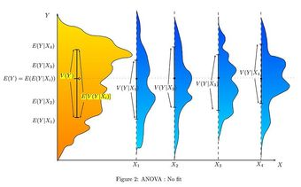{kind=link}
This graph shows a representation of a situation with no fit at all in terms of ANOVA statistics.
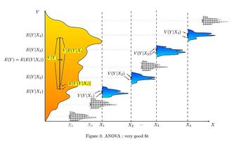{kind=link}
This graph is a representation of a situation with a very good fit in terms of ANOVA statistics
12.8.6. ANOVA Design
Many statisticians base ANOVA on the design of the experiment, especially on the protocol that specifies the random assignment of treatments to subjects.
Learning Objective
Differentiate one-way, factorial, repeated measures, and multivariate ANOVA experimental designs; single and multiple factor ANOVA tests; fixed-effect, random-effect and mixed-effect models
Key Points
- Some popular experimental designs use one-way ANOVA, factorial ANOVA, repeated measures ANOVA, or MANOVA (multivariate analysis of variance).
- ANOVA can be performed for a single factor or multiple factors.
- The classes of models use in ANOVA are fixed-effects models, random-effects models, and multi-effects models.
Key Terms
- ANOVA
- Analysis of variance—a collection of statistical models used to analyze the differences between group means and their associated procedures (such as "variation" among and between groups).
- blocking
- A schedule for conducting treatment combinations in an experimental study such that any effects on the experimental results due to a known change in raw materials, operators, machines, etc., become concentrated in the levels of the blocking variable.
There are several types of ANOVA. Many statisticians base ANOVA on the design of the experiment, especially on the protocol that specifies the random assignment of treatments to subjects. The protocol's description of the assignment mechanism should include a specification of the structure of the treatments and of any blocking. It is also common to apply ANOVA to observational data using an appropriate statistical model. Some popular designs use the following types of ANOVA.
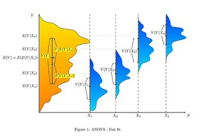{kind=link}
This graph shows a representation of a situation with a fair fit in terms of ANOVA statistics.
- One-way ANOVA is used to test for differences among two or more independent groups. Typically, however, the one-way ANOVA is used to test for differences among at least three groups, since the two-group case can be covered by a $t$ -test. When there are only two means to compare, the $t$ -test and the ANOVA $F$ -test are equivalent.
- Factorial ANOVA is used when the experimenter wants to study the interaction effects among the treatments.
- Repeated measures ANOVA is used when the same subjects are used for each treatment (e.g., in a longitudinal study).
- Multivariate analysis of variance (MANOVA) is used when there is more than one response variable.
ANOVA for a Single Factor
The simplest experiment suitable for ANOVA analysis is the completely randomized experiment with a single factor. More complex experiments with a single factor involve constraints on randomization and include completely randomized blocks. The more complex experiments share many of the complexities of multiple factors.
ANOVA for Multiple Factors
ANOVA generalizes to the study of the effects of multiple factors. When the experiment includes observations at all combinations of levels of each factor, it is termed factorial. Factorial experiments are more efficient than a series of single factor experiments, and the efficiency grows as the number of factors increases. Consequently, factorial designs are heavily used.
The use of ANOVA to study the effects of multiple factors has a complication. In a 3-way ANOVA with factors $x$ , $y$ , and $z$ , the ANOVA model includes terms for the main effects ($x$ , $y$ , $z$ ) and terms for interactions ($xy$ , $xz$ , $yz$ , $xyz$ ). All terms require hypothesis tests. The proliferation of interaction terms increases the risk that some hypothesis test will produce a false positive by chance. Fortunately, experience says that high order interactions are rare. The ability to detect interactions is a major advantage of multiple factor ANOVA. Testing one factor at a time hides interactions, but produces apparently inconsistent experimental results.
Classes of Models
There are three classes of models used in the analysis of variance, and these are outlined here.
Fixed-Effects Models
The fixed-effects model of analysis of variance applies to situations in which the experimenter applies one or more treatments to the subjects of the experiment to see if the response variable values change. This allows the experimenter to estimate the ranges of response variable values that the treatment would generate in the population as a whole.
Random-Effects Models
Random effects models are used when the treatments are not fixed. This occurs when the various factor levels are sampled from a larger population. Because the levels themselves are random variables, some assumptions and the method of contrasting the treatments (a multi-variable generalization of simple differences) differ from the fixed-effects model.
Mixed-Effects Models
A mixed-effects model contains experimental factors of both fixed and random-effects types, with appropriately different interpretations and analysis for the two types. For example, teaching experiments could be performed by a university department to find a good introductory textbook, with each text considered a treatment. The fixed-effects model would compare a list of candidate texts. The random-effects model would determine whether important differences exist among a list of randomly selected texts. The mixed-effects model would compare the (fixed) incumbent texts to randomly selected alternatives.
12.8.7. ANOVA Assumptions
The results of a one-way ANOVA can be considered reliable as long as certain assumptions are met.
Learning Objective
List the assumptions made in a one-way ANOVA and understand the implications of unit-treatment additivity
Key Points
- Response variables are normally distributed (or approximately normally distributed).
- Samples are independent.
- Variances of populations are equal.
- Responses for a given group are independent and identically distributed normal random variables—not a simple random sample (SRS).
- The randomization-based analysis assumes only the homogeneity of the variances of the residuals (as a consequence of unit-treatment additivity) and uses the randomization procedure of the experiment.
Key Terms
- simple random sample
- A sample in which each individual is chosen randomly and entirely by chance, such that each individual has the same probability of being chosen at any stage during the sampling process, and each subset of
$k$ individuals has the same probability of being chosen for the sample as any other subset of$k$ individuals. - unit-treatment additivity
- An assumption that states that the observed response from the experimental unit when receiving treatment can be written as the sum of the unit's response
$y_i$ and the treatment-effect$t_j$ . - ANOVA
- Analysis of variance—a collection of statistical models used to analyze the differences between group means and their associated procedures (such as "variation" among and between groups).
The results of a one-way ANOVA can be considered reliable as long as the following assumptions are met:
- Response variables are normally distributed (or approximately normally distributed).
- Samples are independent.
- Variances of populations are equal.
- Responses for a given group are independent and identically distributed normal random variables—not a simple random sample (SRS).
Necessary assumptions for randomization-based analysis are as follows.
Randomization-Based Analysis
In a randomized controlled experiment, the treatments are randomly assigned to experimental units, following the experimental protocol. This randomization is objective and declared before the experiment is carried out. The objective random-assignment is used to test the significance of the null hypothesis, following the ideas of C.S. Peirce and Ronald A. Fisher. This design-based analysis was developed by Francis J. Anscombe at Rothamsted Experimental Station and by Oscar Kempthorne at Iowa State University. Kempthorne and his students make an assumption of unit-treatment additivity.
Unit-Treatment Additivity
In its simplest form, the assumption of unit-treatment additivity states that the observed response from the experimental unit when receiving treatment can be written as the sum of the unit's response $y_i$ and the treatment-effect $t_j$ , or
The assumption of unit-treatment additivity implies that for every treatment $j$ , the $j$ th treatment has exactly the same effect $t_j$ on every experiment unit. The assumption of unit-treatment additivity usually cannot be directly falsified; however, many consequences of unit-treatment additivity can be falsified. For a randomized experiment, the assumption of unit-treatment additivity implies that the variance is constant for all treatments. Therefore, by contraposition, a necessary condition for unit-treatment additivity is that the variance is constant. The use of unit-treatment additivity and randomization is similar to the design-based inference that is standard in finite-population survey sampling.
Derived Linear Model
Kempthorne uses the randomization-distribution and the assumption of unit-treatment additivity to produce a derived linear model, very similar to the one-way ANOVA discussed previously. The test statistics of this derived linear model are closely approximated by the test statistics of an appropriate normal linear model, according to approximation theorems and simulation studies. However, there are differences. For example, the randomization-based analysis results in a small but (strictly) negative correlation between the observations. In the randomization-based analysis, there is no assumption of a normal distribution and certainly no assumption of independence. On the contrary, the observations are dependent.
In summary, the normal model based ANOVA analysis assumes the independence, normality and homogeneity of the variances of the residuals. The randomization-based analysis assumes only the homogeneity of the variances of the residuals (as a consequence of unit-treatment additivity) and uses the randomization procedure of the experiment. Both these analyses require homoscedasticity, as an assumption for the normal model analysis and as a consequence of randomization and additivity for the randomization-based analysis.
12.9. Two-Way ANOVA
12.9.1. Two-Way ANOVA
Two-way ANOVA examines the influence of different categorical independent variables on one dependent variable.
Learning Objective
Distinguish the two-way ANOVA from the one-way ANOVA and point out the assumptions necessary to perform the test.
Key Points
- The two-way ANOVA is used when there is more than one independent variable and multiple observations for each independent variable.
- The two-way ANOVA can not only determine the main effect of contributions of each independent variable but also identifies if there is a significant interaction effect between the independent variables.
- Another term for the two-way ANOVA is a factorial ANOVA, which has fully replicated measures on two or more crossed factors.
- In a factorial design multiple independent effects are tested simultaneously.
Key Terms
- orthogonal
- statistically independent, with reference to variates
- two-way ANOVA
- an extension of the one-way ANOVA test that examines the influence of different categorical independent variables on one dependent variable
- homoscedastic
- if all random variables in a sequence or vector have the same finite variance
The two-way analysis of variance (ANOVA) test is an extension of the one-way ANOVA test that examines the influence of different categorical independent variables on one dependent variable. While the one-way ANOVA measures the significant effect of one independent variable (IV), the two-way ANOVA is used when there is more than one IV and multiple observations for each IV. The two-way ANOVA can not only determine the main effect of contributions of each IV but also identifies if there is a significant interaction effect between the IVs.
Assumptions of the Two-Way ANOVA
As with other parametric tests, we make the following assumptions when using two-way ANOVA:
- The populations from which the samples are obtained must be normally distributed.
- Sampling is done correctly. Observations for within and between groups must be independent.
- The variances among populations must be equal (homoscedastic).
- Data are interval or nominal.
Factorial Experiments
Another term for the two-way ANOVA is a factorial ANOVA. Factorial experiments are more efficient than a series of single factor experiments and the efficiency grows as the number of factors increases. Consequently, factorial designs are heavily used.
We define a factorial design as having fully replicated measures on two or more crossed factors. In a factorial design multiple independent effects are tested simultaneously. Each level of one factor is tested in combination with each level of the other(s), so the design is orthogonal. The analysis of variance aims to investigate both the independent and combined effect of each factor on the response variable. The combined effect is investigated by assessing whether there is a significant interaction between the factors.
The use of ANOVA to study the effects of multiple factors has a complication. In a 3-way ANOVA with factors $x$ , $y$ , and $z$ , the ANOVA model includes terms for the main effects ($x$ , $y$ , $z$ ) and terms for interactions ( $xy$ , $xz$ , $yz$ , $xyz$ ). All terms require hypothesis tests. The proliferation of interaction terms increases the risk that some hypothesis test will produce a false positive by chance.
Fortunately, experience says that high order interactions are rare, and the ability to detect interactions is a major advantage of multiple factor ANOVA. Testing one factor at a time hides interactions, but produces apparently inconsistent experimental results. Caution is advised when encountering interactions. One should test interaction terms first and expand the analysis beyond ANOVA if interactions are found.
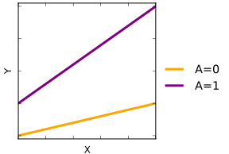{kind=link}
Caution is advised when encountering interactions in a two-way ANOVA. In this graph, the binary factor $A$ and the quantitative variable $X$ interact (are non-additive) when analyzed with respect to the outcome variable $Y$ .
12.10. Repeated-Measures ANOVA
12.10.1. Repeated Measures Design
Repeated measures analysis of variance (rANOVA) is one of the most commonly used statistical approaches to repeated measures designs.
Learning Objective
Evaluate the significance of repeated measures design given its advantages and disadvantages
Key Points
- Repeated measures design, also known as within-subjects design, uses the same subjects with every condition of the research, including the control.
- Repeated measures design can be used to conduct an experiment when few participants are available, conduct an experiment more efficiently, or to study changes in participants' behavior over time.
- The primary strengths of the repeated measures design is that it makes an experiment more efficient and helps keep the variability low.
- A disadvantage of the repeated measure design is that it may not be possible for each participant to be in all conditions of the experiment (due to time constraints, location of experiment, etc.).
- One of the greatest advantages to using the rANOVA, as is the case with repeated measures designs in general, is that you are able to partition out variability due to individual differences.
- The rANOVA is still highly vulnerable to effects from missing values, imputation, unequivalent time points between subjects, and violations of sphericity—factors which can lead to sampling bias and inflated levels of type I error.
Key Terms
- sphericity
- A statistical assumption requiring that the variances for each set of difference scores are equal.
- order effect
- An effect that occurs when a participant in an experiment is able to perform a task and then perform it again at some later time.
- longitudinal study
- A correlational research study that involves repeated observations of the same variables over long periods of time.
Repeated measures design (also known as "within-subjects design") uses the same subjects with every condition of the research, including the control. For instance, repeated measures are collected in a longitudinal study in which change over time is assessed. Other studies compare the same measure under two or more different conditions. For instance, to test the effects of caffeine on cognitive function, a subject's math ability might be tested once after they consume caffeine and another time when they consume a placebo.
{kind=link}
An example of a test using a repeated measures design to test the effects of caffeine on cognitive function. A subject's math ability might be tested once after they consume a caffeinated cup of coffee, and again when they consume a placebo.
Repeated measures design can be used to:
- Conduct an experiment when few participants are available: The repeated measures design reduces the variance of estimates of treatment-effects, allowing statistical inference to be made with fewer subjects.
- Conduct experiment more efficiently: Repeated measures designs allow many experiments to be completed more quickly, as only a few groups need to be trained to complete an entire experiment.
- Study changes in participants' behavior over time: Repeated measures designs allow researchers to monitor how the participants change over the passage of time, both in the case of long-term situations like longitudinal studies and in the much shorter-term case of order effects.
Advantages and Disadvantages
The primary strengths of the repeated measures design is that it makes an experiment more efficient and helps keep the variability low. This helps to keep the validity of the results higher, while still allowing for smaller than usual subject groups.
A disadvantage of the repeated measure design is that it may not be possible for each participant to be in all conditions of the experiment (due to time constraints, location of experiment, etc.). There are also several threats to the internal validity of this design, namely a regression threat (when subjects are tested several times, their scores tend to regress towards the mean), a maturation threat (subjects may change during the course of the experiment) and a history threat (events outside the experiment that may change the response of subjects between the repeated measures).
Repeated Measures ANOVA
Repeated measures analysis of variance (rANOVA) is one of the most commonly used statistical approaches to repeated measures designs.
Partitioning of Error
One of the greatest advantages to using the rANOVA, as is the case with repeated measures designs in general, is that you are able to partition out variability due to individual differences. Consider the general structure of the $F$ -statistic:
$F = \dfrac{MS_{\text{treatment}}}{MS_{\text{error}}} = \dfrac{SS_{\text{treatment}} / df_{\text{treatment}}}{SS_{\text{error}} / df_{\text{error}}}$
In a between-subjects design there is an element of variance due to individual difference that is combined in with the treatment and error terms:
In a repeated measures design it is possible to account for these differences, and partition them out from the treatment and error terms. In such a case, the variability can be broken down into between-treatments variability (or within-subjects effects, excluding individual differences) and within-treatments variability. The within-treatments variability can be further partitioned into between-subjects variability (individual differences) and error (excluding the individual differences).
In reference to the general structure of the $F$ -statistic, it is clear that by partitioning out the between-subjects variability, the $F$ -value will increase because the sum of squares error term will be smaller resulting in a smaller $MS_{\text{error}}$ . It is noteworthy that partitioning variability pulls out degrees of freedom from the $F$ -test, therefore the between-subjects variability must be significant enough to offset the loss in degrees of freedom. If between-subjects variability is small this process may actually reduce the $F$ -value.
Assumptions
As with all statistical analyses, there are a number of assumptions that should be met to justify the use of this test. Violations to these assumptions can moderately to severely affect results, and often lead to an inflation of type 1 error. Univariate assumptions include:
- Normality: For each level of the within-subjects factor, the dependent variable must have a normal distribution.
- Sphericity: Difference scores computed between two levels of a within-subjects factor must have the same variance for the comparison of any two levels.
- Randomness: Cases should be derived from a random sample, and the scores between participants should be independent from each other.
The rANOVA also requires that certain multivariate assumptions are met because a multivariate test is conducted on difference scores. These include:
- Multivariate normality: The difference scores are multivariately normally distributed in the population.
- Randomness: Individual cases should be derived from a random sample, and the difference scores for each participant are independent from those of another participant.
$F$ -Test
Depending on the number of within-subjects factors and assumption violates, it is necessary to select the most appropriate of three tests:
- Standard Univariate ANOVA $F$ -test: This test is commonly used when there are only two levels of the within-subjects factor. This test is not recommended for use when there are more than 2 levels of the within-subjects factor because the assumption of sphericity is commonly violated in such cases.
- Alternative Univariate test: These tests account for violations to the assumption of sphericity, and can be used when the within-subjects factor exceeds 2 levels. The $F$ statistic will be the same as in the Standard Univariate ANOVA F test, but is associated with a more accurate $p$ -value. This correction is done by adjusting the $df$ downward for determining the critical $F$ value.
- Multivariate Test: This test does not assume sphericity, but is also highly conservative.
While there are many advantages to repeated-measures design, the repeated measures ANOVA is not always the best statistical analyses to conduct. The rANOVA is still highly vulnerable to effects from missing values, imputation, unequivalent time points between subjects, and violations of sphericity. These issues can result in sampling bias and inflated rates of type I error.
12.10.2. Further Discussion of ANOVA
Due to the iterative nature of experimentation, preparatory and follow-up analyses are often necessary in ANOVA.
Learning Objective
Contrast preparatory and follow-up analysis in constructing an experiment
Key Points
- Experimentation is often sequential, with early experiments often being designed to provide a mean-unbiased estimate of treatment effects and of experimental error, and later experiments often being designed to test a hypothesis that a treatment effect has an important magnitude.
- Power analysis is often applied in the context of ANOVA in order to assess the probability of successfully rejecting the null hypothesis if we assume a certain ANOVA design, effect size in the population, sample size and significance level.
- Effect size estimates facilitate the comparison of findings in studies and across disciplines.
- A statistically significant effect in ANOVA is often followed up with one or more different follow-up tests, in order to assess which groups are different from which other groups or to test various other focused hypotheses.
Key Terms
- homoscedasticity
- A property of a set of random variables where each variable has the same finite variance.
- iterative
- Of a procedure that involves repetition of steps (iteration) to achieve the desired outcome.
Some analysis is required in support of the design of the experiment, while other analysis is performed after changes in the factors are formally found to produce statistically significant changes in the responses. Because experimentation is iterative, the results of one experiment alter plans for following experiments.
Preparatory Analysis
The Number of Experimental Units
In the design of an experiment, the number of experimental units is planned to satisfy the goals of the experiment. Most often, the number of experimental units is chosen so that the experiment is within budget and has adequate power, among other goals.
Experimentation is often sequential, with early experiments often being designed to provide a mean-unbiased estimate of treatment effects and of experimental error, and later experiments often being designed to test a hypothesis that a treatment effect has an important magnitude.
Less formal methods for selecting the number of experimental units include graphical methods based on limiting the probability of false negative errors, graphical methods based on an expected variation increase (above the residuals) and methods based on achieving a desired confidence interval.
Power Analysis
Power analysis is often applied in the context of ANOVA in order to assess the probability of successfully rejecting the null hypothesis if we assume a certain ANOVA design, effect size in the population, sample size and significance level. Power analysis can assist in study design by determining what sample size would be required in order to have a reasonable chance of rejecting the null hypothesis when the alternative hypothesis is true.
Effect Size
Effect size estimates facilitate the comparison of findings in studies and across disciplines. Therefore, several standardized measures of effect gauge the strength of the association between a predictor (or set of predictors) and the dependent variable.
Eta-squared ($\eta^2$ ) describes the ratio of variance explained in the dependent variable by a predictor, while controlling for other predictors. Eta-squared is a biased estimator of the variance explained by the model in the population (it estimates only the effect size in the sample). On average, it overestimates the variance explained in the population. As the sample size gets larger the amount of bias gets smaller:
Jacob Cohen, an American statistician and psychologist, suggested effect sizes for various indexes, including $f$ (where $0.1$ is a small effect, $\$0.25$ is a medium effect and $0.4$ is a large effect). He also offers a conversion table for eta-squared ($\eta^2$ ) where $0.0099$ constitutes a small effect, $0.0588$ a medium effect and $0.1379$ a large effect.
Follow-Up Analysis
Model Confirmation
It is prudent to verify that the assumptions of ANOVA have been met. Residuals are examined or analyzed to confirm homoscedasticity and gross normality. Residuals should have the appearance of (zero mean normal distribution) noise when plotted as a function of anything including time and modeled data values. Trends hint at interactions among factors or among observations. One rule of thumb is: if the largest standard deviation is less than twice the smallest standard deviation, we can use methods based on the assumption of equal standard deviations, and our results will still be approximately correct.
Follow-Up Tests
A statistically significant effect in ANOVA is often followed up with one or more different follow-up tests. This can be performed in order to assess which groups are different from which other groups, or to test various other focused hypotheses. Follow-up tests are often distinguished in terms of whether they are planned (a priori) or post hoc. Planned tests are determined before looking at the data, and post hoc tests are performed after looking at the data.
Post hoc tests, such as Tukey's range test, most commonly compare every group mean with every other group mean and typically incorporate some method of controlling for type I errors. Comparisons, which are most commonly planned, can be either simple or compound. Simple comparisons compare one group mean with one other group mean. Compound comparisons typically compare two sets of groups means where one set has two or more groups (e.g., compare average group means of groups $A$ , $B$ , and $C$ with that of group $D$ ). Comparisons can also look at tests of trend, such as linear and quadratic relationships, when the independent variable involves ordered levels.